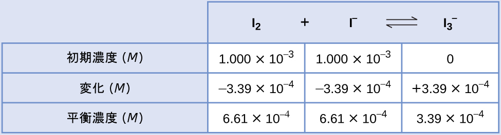

第13章 基本的な平衡の概念
図13.1 | 体内の二酸化炭素の輸送には、(とりわけ)加水分解や酸イオン化などのいくつかの可逆的な化学反応が関与しています。
この章の概要
13.1 化学平衡
13.2 平衡定数
13.3 移動する平衡:ル・シャトリエの原理
13.4 平衡計算
はじめに
太陽を浴びる人たちと泳ぐ人たちで賑わうビーチを想像してみてください。太陽の下で日光浴をしている人たちが暑くなりすぎると、彼らは海に入って泳いだり涼んだりします。泳いでいる人たちが疲れてくると、彼らは休むために浜辺に戻ります。もし、日光浴をする人が海に入る速度と、泳いでいる人が砂浜に戻る速度が同じならば、日光浴をする人と水泳をする人の数は一定に留まるでしょう(同一の人ではありませんが)。このシナリオは、平衡(対向するプロセスが等しい速度で発生するもの)として知られる動的現象を示しています。化学的および物理的なプロセスはこの現象の対象です。順方向の反応速度と逆方向の反応速度が等しいとき、それらのプロセスは平衡にあります。平衡系は自然界に広く存在しており、血液中に溶解した二酸化炭素が関与するさまざまな反応がその例です(図13.1参照)。本章では、化学平衡の本質的な側面についての詳細な入門を提供します。
13.1 化学平衡
この節が終わるまでに、あなたは次のことができるようになります:
•平衡系の性質を記述する
•化学平衡の動的な性質を説明する
化学反応式を書くときの慣例として、反応矢印の左側に反応物の化学式を、右側に生成物の化学式を配置します。この慣例と、「反応物」および「生成物」の定義とによって、化学反応式は問題としている反応が左側から右側に進んでいることを表しています。しかしながら、可逆反応は、順方向(左側から右側へ)と逆方向(右側から左側へ)の両方の方向に進むことがあります。順方向と逆方向の反応の速度が等しい場合、反応物と生成物の種の濃度は時間の経過とともに一定となり、系は平衡になります。平衡系の中の反応物と生成物の相対的な濃度は大きく異なります。ある系では平衡時に大部分が生成物であり、ある系では大部分が反応物であり、ある系では両方がかなりの量で含まれています。
図13.2は、無色の四酸化二窒素が可逆的に分解されて褐色の二酸化窒素が得られることを利用した基本的な平衡の概念を示しています。これは以下の反応式で表される素反応です:
\[ {\rm N_2 O_4\ (g)⇌ 2NO_2\ (g)} \]
反応の可逆的な性質を強調するために特殊な二重矢印が使用されていることに注意してください。
図13.2 | (a)無色のN₂O₄が入っている密閉された管は、それが分解して褐色のNO₂が生成されるにつれて暗くなります。(b)分解反応が平衡に達するまでの時間に対する濃度変化。(c)平衡では、順方向の反応速度と逆方向の反応速度は等しくなります。
この素反応のプロセスでは、順反応と逆反応の速度則は、反応の化学量論から直接導き出すことができます:
\[ 速度_順 = k_順 [{\rm N_2 O_4}]\\ 速度_ 逆 = k_逆 [{\rm NO_2}]^2 \]
反応が始まると(t = 0)、反応物N₂O₄の濃度は有限であり、生成物NO₂の濃度はゼロであるため、順方向の反応は有限の速度で進行し、逆方向の反応速度はゼロとなります。時間の経過とともにN₂O₄は消費されて濃度が低下する一方で、NO₂は生成されて濃度が上昇します(図13.2b)。反応物の濃度が低下すると順反応の速度が遅くなり、生成物の濃度が上昇すると逆反応の速度が速くなります(図13.2c)。このプロセスは順方向と逆方向の反応速度が等しくなるまで続き、その時点で反応は平衡に達します。そこでは、反応物と生成物の濃度が一定になることが特徴です(図13.2bと図13.2cの色付き部分)。化学平衡は動的なものであることを強調しておくことが重要です。平衡にある反応は「止まっている」のではなく、同じ速度で順方向と逆方向に進んでいます。この動的な性質は、この教科書の本章と以降の章で議論するように、平衡の振る舞いを理解するために必要不可欠なものです。
図13.3 | 2人のジャグリング演技は、化学平衡の動的な側面を例示しています。それぞれの人が同じ速度でクラブを投げたりキャッチしたりしており、それぞれが(ほぼ)一定の数のクラブを持っています。
相転移のような物理的変化も可逆的であり、平衡を確立することがあります。この概念は、この教科書の別の章で、凝縮相(液体または固体)の蒸気圧の議論を通して導入されました。一例として、臭素の蒸発を考えてみましょう:
\[ {\rm Br_2\ (l) ⇌ Br_2\ (g)} \]
空の容器に液体の臭素を加えて、容器を密閉すると、液体の露出した表面積とその温度が一定である限り、上記の順方向のプロセス(蒸発)が開始され、ほぼ一定の速度で継続します。ますます多くの量の臭素気体が生成されるにつれ、逆方向のプロセス(凝縮)の速度は蒸発の速度と等しくなるまで増加し、平衡が確立されます。この相転移平衡を示す写真が図13.4に与えられています。
図13.4 | 液体と気体の臭素の平衡混合物が入った密閉管。(credit: http://images-of-elements.com/bromine.php)
13.2 平衡定数
この節が終わるまでに、あなたは次のことができるようになります:
•均一系反応と不均一系反応を表す化学反応式から反応商を導き出す
•濃度と圧力を用いて、反応商と平衡定数の値を計算する
•平衡定数の大きさを化学系の性質に関連付ける
可逆反応の状態は、その反応商(Q)を求めることによって簡単に評価できます。
\[ m{\rm A} + n{\rm B} ⇌ x{\rm C} + y{\rm D} \]
によって表される可逆反応の場合、反応商はバランスの取れた反応式の化学量論から以下のように直接導き出されます。
\[ Q_c =\frac{[{\rm C}]^x [{\rm D}]^y}{[{\rm A}]^m [{\rm B}]^n} \]
ここで、添え字cは式の中でモル濃度が使用されていることを示しています。反応物と生成物が気体状の場合、反応商は分圧を用いて同様に導出することができます。
\[ Q_p =\frac{P_{\rm C}^xP_{\rm D}^y}{P_{\rm A}^mP_{\rm B}^n} \]
上記の反応商の式は、より厳密な式を単純化したものであり、濃度と圧力についての絶対値ではなく相対値を使用していることに注意してください。これらの相対的な濃度と圧力の値は無次元です(それらは単位を持ちません)。結果として、反応商も同様に無次元です。この入門教科書の目的のためには、Qを計算する際には単純化された式を使い、単位を無視しても差し支えありません。ほとんどの場合、これは反応商を含む計算においてわずかな誤差しかもたらしません。
例題13.1 反応商の式を書く
以下のそれぞれの反応について、濃度に基づく反応商の式を書いてください:
(a)3O₂(g) ⇌ 2O₃(g)
(b)N₂(g) + 3H₂(g) ⇌ 2NH₃(g)
(c)4NH₃(g) + 7O₂(g) ⇌ 4NO₂(g) + 6H₂O(g)
解法
\(({\rm a})\ Q_c =\frac{[{\rm O_3}]^2}{[{\rm O_2}]^3}\)
\(({\rm b})\ Q_c =\frac{[{\rm NH_3}]^2}{[{\rm N_2}][{\rm H_2}]^3}\)
\(({\rm c})\ Q_c =\frac{[{\rm NO_2}]^4 [{\rm H_2 O}]^6}{[{\rm NH_3}]^4 [{\rm O_2}]^7}\)
学習内容の確認
以下のそれぞれの反応について、濃度に基づく反応商の式を書いてください:
(a)2SO₂(g) + O₂(g) ⇌ 2SO₃(g)
(b)C₄H₈(g) ⇌ 2C₂H₄(g)
(c)2C₄H₁₀(g) + 13O₂(g) ⇌ 8CO₂(g) + 10H₂O(g)
解答:
\(({\rm a})\ Q_c =\frac{[{\rm SO_3}]^2}{[{\rm SO_2}]^2 [{\rm O_2}]}\)
\(({\rm b})\ Q_c =\frac{[{\rm C_2 H_4}]^2}{[{\rm C_4 H_8}]}\)
\(({\rm c})\ Q_c =\frac{[{\rm CO_2}]^8 [{\rm H_2 O}]^{10}}{[{\rm C_4 H_{10}}]^2 [{\rm O_2}]^{13}}\)

図13.5 | (a)反応物のみの混合物から始めた場合と、(b)生成物のみから始めた場合に到達する化学平衡についての濃度とQcの変化。
Qの数値は反応が平衡に向かって進行するにつれて変化します。したがって、それは反応の状態を示す有用な指標となります。この点を説明するために、二酸化硫黄の酸化を考えてみましょう:
\[ {\rm 2SO_2\ (g) + O_2\ (g) ⇌ 2SO_3\ (g)} \]
図13.5には、2つの異なる実験シナリオが示されています。1つは反応物であるSO₂とO₂のみの混合物で反応を開始する場合で、もう1つは生成物であるSO₃のみで開始する場合です。反応物のみの混合物で開始する反応では、Qは最初はゼロに等しいです:
\[ Q_c =\frac{[{\rm SO_3}]^2}{[{\rm SO_2}]^2 [{\rm O_2}]}=\frac{0^2}{[{\rm SO_2}]^2 [{\rm O_2}]}= 0 \]
反応が順方向に平衡に向かって進行するにつれて、反応物の濃度は減少し(Qcの分母も同様)、生成物の濃度は増加し(Qcの分子も同様)、結果として反応商は増加します。平衡に達すると、反応物と生成物の濃度は一定になり、Qcの値も同様です。
生成物のみが存在する状態で反応が始まる場合、Qcの値は最初は不明確です(測定できないほど大きい、すなわち無限大):
\[ Q_c =\frac{[{\rm SO_3}]^2}{[{\rm SO_2}]^2 [{\rm O_2}]}=\frac{[{\rm SO_3}]^2}{0} → ∞ \]
この場合、反応は逆方向に平衡に向かって進行します。時間の経過とともに生成物の濃度とQcの分子が減少し、反応物の濃度とQcの分母が増加し、その結果として、反応商が減少して平衡において一定になります。
ある系が平衡において示すQの一定の値のことを、平衡定数Kと呼びます:
\[ K ≡ Q\ (平衡において) \]
図13.5のデータプロットを比較すると、どちらの実験シナリオでも平衡定数は同じ値になっていることがわかります。これはすべての平衡系にとって一般的な観察であり、質量作用の法則として知られています:「所与の温度では、平衡にある系の反応商は一定です。」
例題13.2 反応商を求める
気体の二酸化窒素は、この反応式に従って四酸化二窒素を生成します:
\[ {\rm 2NO_2\ (g) ⇌ N_2 O_4\ (g)} \]
25°Cで1.0Lフラスコに0.10molのNO₂を加えると、平衡([NO₂] = 0.016 Mおよび[N₂O₄] = 0.042 M)になるように濃度が変化します。
(a)何らかの反応が起こる前の反応商の値は何ですか?
(b)この反応の平衡定数の値は何ですか?
解法
この節で以前に述べたように、この教科書の中のすべての平衡計算では、QとKの簡略化された式を使用し、濃度や圧力の単位は無視します。
(a)何らかの生成物が生成される前では、[NO₂] = 0.10 mol/1.0 L= 0.10 M、および[N₂O₄] = 0 Mです。したがって、
\[ Q_c =\frac{[{\rm N_2 O_4}]}{[{\rm NO_2}]^2}=\frac{0}{0.10^2}= 0 \]
(b)平衡では、Kc = Qc = [N₂O₄]/[NO₂]² = 0.042/(0.016)²= 1.6 × 10²です。平衡定数は 1.6 × 10²です。
学習内容の確認
2SO₂(g) + O₂(g) ⇌ 2SO₃(g)の反応について、平衡時の濃度は[SO₂] = 0.90 M、[O₂] = 0.35 M、[SO₃] = 1.1 Mです。平衡定数Kcの値は何ですか?
解答:Kc = 4.3
その定義により、平衡定数の大きさは平衡時の反応混合物の組成を明示的に反映しており、順方向の反応の進度に関して解釈することができます。大きなKを示す反応は、反応物の大部分が生成物に変換されたときに平衡に達します。一方、小さなKは、ほんのわずかな反応物が変換された後に平衡に達することを示します。Kの大きさは平衡に達するまでの速さや遅さを示すものではないというのを覚えておくことが重要です。ある種の平衡は、ほぼ瞬間的に確立されるほどに急速なものですが、他のものは数日、数年、またはそれ以上の時間をかけても感知できるほどの変化が見られないぐらいゆっくりと確立します。
反応の平衡定数は、反応物および/または生成物を含む混合物の振る舞いを予測するために使用することができます。上述の二酸化硫黄の酸化プロセスで示されたように、化学反応は、平衡を達成するために必要とされるどのような方向にも進行します。関心のある平衡系のQとKを比較することで、どのような反応(順方向か逆方向か)が起こるか(もし起こるとして)を予測することができます。
この重要な点をさらに説明するために、以下に示されるような可逆反応を考えてみましょう:
\[ {\rm CO\ (g) + H_2 O\ (g) ⇌ CO_2\ (g) + H_2\ (g)} \hspace{10pt} K_c = 0.640 \hspace{10pt} T = \rm 800\ °C \]
図13.6の棒グラフは、3つの異なる反応混合物について、反応物と生成物の濃度の変化を表しています。混合物1と3の反応商は最初は反応の平衡定数よりも小さいので、これらの混合物のそれぞれは平衡を達成するために正味で順反応を経験することになります。混合物2の反応商は最初は平衡定数よりも大きいので、この混合物は平衡が確立されるまで逆方向に進みます。
図13.6 | CO(g) + H₂O(g) ⇌ CO₂(g) + H₂(g)の反応で平衡が確立される前(Qc ≠ Kc)と後(Qc = Kc)での混合物の3つの組成。
例題13.3 反応の方向を予測する
この反応に関する3つの実験の反応物と生成物の開始時の濃度が以下に与えられています:
\[ {\rm CO\ (g) + H_2 O\ (g) ⇌ CO_2\ (g) + H_2\ (g)}\\ K_c = 0.64 \]
示されている3つの実験のそれぞれについて、反応が平衡状態になるまでにどの方向に進むかを決定してください。
解法
実験1:
\[ Q_c =\frac{\rm [CO_2][H_2]}{\rm [CO][H_2 O]}=\frac{(0.0040)(0.0040)}{(0.020)(0.020)}= 0.040\\ Q_c < K_c\ (0.040 < 0.64) \]
反応は順方向に進みます。
実験2:
\[ Q_c =\frac{\rm [CO_2][H_2]}{\rm [CO][H_2 O]}=\frac{(0.037)(0.046)}{(0.011)(0.0011)}= 1.4 × 10^2\\ Q_c > K_c\ (140 > 0.64) \]
反応は逆方向に進みます。
実験3:
\[ Q_c =\frac{\rm [CO_2][H_2]}{\rm [CO][H_2 O]}=\frac{(0.0015)(0.0076)}{(0.0094)(0.0025)}= 0.48\\ Q_c < K_c\ (0.48 < 0.64) \]
反応は順方向に進みます。
学習内容の確認
反応商を計算し、以下のそれぞれの反応が平衡に達するまでにどの方向に進むかを決定してください。
(a)1.00Lのフラスコに0.0500 molのNO(g)、0.0155 molのCl₂(g)、および0.500 molのNOClが含まれています:
\[ {\rm 2NO\ (g) + Cl_2\ (g) ⇌ 2NOCl\ (g)} \hspace{20pt} K_c = 4.6 × 10^4 \]
(b)5.0Lのフラスコに17 gのNH₃、14 gのN₂、および12 gのH₂が含まれています:
\[ {\rm N_2\ (g) + 3H_2\ (g) ⇌ 2NH_3\ (g)} \hspace{20pt} K_c = 0.060 \]
(c)2.00Lのフラスコに230 gのSO₃(g)が含まれています:
\[ {\rm 2SO_3\ (g) ⇌ 2SO_2\ (g) + O_2\ (g)} \hspace{20pt} K_c = 0.230 \]
解答:(a)Qc = 6.45 × 10³、順方向。(b)Qc = 0.23、逆方向。(c)Qc = 0、順方向。
均一系平衡
均一系平衡とは、すべての反応物と生成物(該当する場合にはすべての触媒も)が同じ相に存在する平衡のことです。この定義によれば、均一系平衡は溶液中で起こります。これらの溶液は、以下の例に示されるように、最も一般的には液相または気相のいずれかです:
\[ \begin{eqnarray} {\rm C_2 H_2\ (aq) + 2Br_2\ (aq) ⇌ C_2 H_2 Br_4\ (aq)} \hspace{20pt} K_c &=&{\rm \frac{[C_2 H_2 Br_4]}{[C_2 H_2][Br_2]^2}}\\ {\rm I_2\ (aq) + I^−\ (aq) ⇌ {I_3}^−\ (aq)} \hspace{20pt} K_c &=&{\rm \frac{[{I_3}^−]}{[I_2][I^−]}}\\ {\rm HF\ (aq) + H_2 O\ (l) ⇌ H_3 O^+\ (aq) + F^−\ (aq)} \hspace{20pt} K_c &=&{\rm \frac{[H_3 O^+][F^−]}{[HF]}}\\ {\rm NH_3\ (aq) + H_2 O\ (l) ⇌ {NH_4}^+\ (aq) + OH^−\ (aq)} \hspace{20pt} K_c &=&{\rm \frac{[{NH_4}^+][OH^−]}{[NH_3]}}\\ \end{eqnarray} \]
これらの例はすべて水溶液、つまり水が溶媒として機能するものを含んでいます。最後の2つの例では、水も反応物として機能していますが、その濃度は反応商には含まれていません。この省略の理由は、この章で以前に述べたQ(またはK)の式のより厳密な形式に関係しています。その形式では、液体と固体の相対濃度が1に等しく、含める必要がありません。その結果、反応商には気体状および溶質の種の濃度や圧力の項のみが含まれます。
以下の平衡はすべて気相の溶液[気溶体]を含んでいます:
\[ \begin{eqnarray} {\rm C_2 H_6\ (g) ⇌ C_2 H_4\ (g) + H_2\ (g)} \hspace{20pt} K_c &=&{\rm \frac{[C_2 H_4][H_2]}{[C_2 H_6]}}\\ {\rm 3O_2\ (g) ⇌ 2O_3\ (g)} \hspace{20pt} K_c &=&{\rm \frac{[O_3]^2}{[O_2]^3}}\\ {\rm N_2\ (g) + 3H_2\ (g) ⇌ 2NH_3\ (g)} \hspace{20pt} K_c &=&{\rm \frac{[NH_3]^2}{[N_2][H_2]^3}}\\ {\rm C_3 H_8\ (g) + 5O_2\ (g) ⇌ 3CO_2\ (g) + 4H_2 O\ (g)} \hspace{20pt} K_c &=&{\rm \frac{[CO_2]^3[H_2 O]^4}{[C_3 H_8][O_2]^5}}\\ \end{eqnarray} \]
気相の溶液の場合、平衡定数は反応物と生成物のモル濃度(Kc)または分圧(Kp)の観点から表現されることがあります。これら2つのKの値の間の関係は、理想気体の方程式とモル濃度の定義から簡単に導き出すことができます:
\[ \begin{eqnarray} PV &=& nRT\\ P &=&\left(\frac{n}{V}\right) RT\\ &=& MRT \end{eqnarray} \]
ここで、Pは分圧、Vは体積、nはモル量、Rは気体定数、Tは温度、Mはモル濃度です。
気相の反応mA + nB ⇌ xC + yDについて:
\[ \begin{eqnarray} K_P &=&\frac{(P_{\rm C})^x(P_{\rm D})^y}{(P_{\rm A})^m(P_{\rm B})^n}\\ &=&\frac{([{\rm C}]× RT)^x ([{\rm D}]× RT)^y}{([{\rm A}]× RT)^m ([{\rm B}]× RT)^n}\\ &=&\frac{[{\rm C}]^x [{\rm D}]^y}{[{\rm A}]^m [{\rm B}]^n}×\frac{(RT)^{x+y}}{(RT)^{m+n}}\\ &=& K_c (RT)^{(x+y) − (m+n)}\\ &=& K_c (RT)^{Δn} \end{eqnarray} \]
そして、KcとKpの関係は
\[ K_p = K_ c (RT)^{Δn} \]
ここで、Δnは、生成気体と反応気体のモル量の差であり、この場合では:
\[ Δn = (x+y) − (m+n) \]
例題13.4 Kpの計算
以下の反応(a)～(c)のそれぞれについて、KcとKpを関係付ける式を書いてください:
(a)C₂H₆(g) ⇌ C₂H₄(g) + H₂(g)
(b)CO(g) + H₂O(g) ⇌ CO₂(g) + H₂(g)
(c)N₂(g) + 3H₂(g) ⇌ 2NH₃(g)
(d)900 °Cでの反応:CS₂(g) + 4H₂(g) ⇌ CH₄(g) + 2H₂S(g)では、Kcが0.28です。この温度でのKpは何ですか?
解法
\(({\rm a}) Δn = (2) − (1) = 1 \hspace{20pt} K_p = K_c (RT)^{Δn} = K_c (RT)^1 = K_c (RT)\)
\(({\rm b}) Δn = (2) − (2) = 0 \hspace{20pt} K_p = K_c (RT)^{Δn} = K_c (RT)^0 = K_c\)
\(({\rm c}) Δn = (2) − (1 + 3) = −2 \hspace{20pt} K_p = K_c (RT)^{Δn} = K_c (RT)^{−2} =\frac{K_c}{(RT)^2}\)
\(({\rm d}) K_p = K_c (RT)^{Δn} = (0.28)[(0.0821)(1173)]^{−2} = 3.0 × 10^{−5}\)
学習内容の確認
以下の反応(a)～(c)のそれぞれについて、KcとKpを関係付ける式を書いてください:
(a)2SO₂(g) + O₂(g) ⇌ 2SO₃(g)
(b)N₂O₄(g) ⇌ 2NO₂(g)
(c)C₃H₈(g) + 5O₂(g) ⇌ 3CO₂(g) + 4H₂O(g)
(d)227 °Cでの反応:CH₃OH(g) ⇌ CO(g) + 2H₂(g)では、Kc = 0.0952です。この温度でのKpの値は何ですか?
解答:(a)Kp = Kc(RT)⁻¹、(b)Kp = Kc(RT)、(c)Kp = Kc(RT)、(d)160または1.6 × 10²
不均一系平衡
不均一系平衡は、以下の例で示されるように、2つかそれ以上の異なる相の反応物と生成物を含みます:
\[ \begin{eqnarray} {\rm PbCl_2\ (s) ⇌ Pb^{2+}\ (aq) + 2Cl^−\ (aq)} \hspace{20pt} K_c &=& {\rm [Pb^{2+}][Cl^−]^2}\\ {\rm CaO\ (s) + CO_2\ (g) ⇌ CaCO_3\ (s)} \hspace{20pt} K_c &=&{\rm \frac{1}{[CO_2]}}\\ {\rm C\ (s) + 2S\ (g) ⇌ CS_2\ (g)} \hspace{20pt} K_c &=&{\rm \frac{[CS_2]}{[S]^2}}\\ {\rm Br_2\ (l) ⇌ Br_2\ (g)} \hspace{20pt} K_c &=& {\rm [Br_2\ (g)]} \end{eqnarray} \]
繰り返しになりますが、濃度の項は、前に議論したように、気体状および溶質の種だけが含まれていることに注意してください。
上記の例のうちの2つでは、平衡定数の中には気体の種の項だけが含まれているので、Kpの式も以下のように書かれるでしょう:
\[ \begin{eqnarray} {\rm CaO\ (s) + CO_2\ (g) ⇌ CaCO_3\ (s)} \hspace{20pt} K_p &=&\frac{1}{P_{\rm CO_2}}\\ {\rm C\ (s) + 2S\ (g) ⇌ CS_2\ (g)} \hspace{20pt} K_p &=&\frac{P_{\rm CS_2}}{(P_{\rm S})^2}\\ \end{eqnarray} \]
結合平衡
これまで議論してきた平衡系は、すべて単一の可逆反応だけを含む比較的単純なものでした。しかしながら、多くの系は、1つかそれ以上の反応種や生成種を共通に持つ、2つかそれ以上の結合平衡反応を伴います。質量作用の法則により、バランスの取れた化学反応式から平衡定数の式を簡単に導き出すことができるので、結合平衡を伴う系のKの値は、個々の反応のKの値と関連付けることができます。以下に説明するように、このアプローチには3つの基本的な操作が含まれています。
1.化学反応式の方向を変えることは、本質的には「反応物」と「生成物」の同一性を入れ替えることであり、方向を変えられた反応式の平衡定数は、単に元の反応式の平衡定数の逆数になります。
\[ {\rm A ⇌ B} \hspace{20pt} K_c =\frac{[{\rm B}]}{[{\rm A}]}\\ {\rm B ⇌ A} \hspace{20pt} K_{c'} =\frac{[{\rm A}]}{[{\rm B}]}\\ K_{c'} =\frac{1}{K_c}\\ \]
2.反応式の化学量論的係数をある係数xだけ変更すると、同じ係数だけ平衡定数が指数関数的に変化することになります:
\[ {\rm A ⇌ B} \hspace{20pt} K_c =\frac{[{\rm B}]}{[{\rm A}]}\\ x{\rm A} ⇌ x{\rm B} \hspace{20pt} K_{c'} =\frac{[{\rm B}]^x}{[{\rm A}]^x}\\ K_{c'} ={K_c}^x\\ \]
3.2つかそれ以上の平衡の反応式を一緒に足し合わせると、全体の式が得られ、その平衡定数は、個々の反応のKの値の数学的な積となります:
\[ {\rm A ⇌ B} \hspace{20pt} K_{c1} =\frac{[{\rm B}]}{[{\rm A}]}\\ {\rm B ⇌ C} \hspace{20pt} K_{c2} =\frac{[{\rm C}]}{[{\rm B}]}\\ \]
これらの結合平衡の正味の反応は、2つの平衡の反応式を合計し、冗長なものを相殺することによって得られます:
\[ {\rm A + B ⇌ B + C}\\ {\rm A ⇌ C} \hspace{20pt} K_{c'} =\frac{[{\rm C}]}{[{\rm A}]}\\ \]
正味の反応の平衡定数と2つの結合平衡反応の平衡定数を比較すると、以下のような関係が得られます:
\[ K_{c1} K_{c2} =\frac{[{\rm B}]}{[{\rm A}]}×\frac{[{\rm C}]}{[{\rm B}]}=\frac{[{\rm B}][{\rm C}]}{[{\rm A}][{\rm B}]}=\frac{[{\rm C}]}{[{\rm A}]}= K_{c'}\\ K_{c'} = K_{c1} K_{c2}\\ \]
例題13.5は、結合平衡のプロセスを記述する際にこの戦略を使用することを例示しています。
例題13.5 結合反応の平衡定数
窒素、水素およびヨウ素を含む混合物が、400°Cで以下の平衡を確立しました:
\[ {\rm 2NH_3\ (g) + 3I_2\ (g) ⇌ N_2\ (g) + 6HI\ (g)} \]
以下の情報を使用して、この反応のKcを計算してください。
\[ \begin{eqnarray} {\rm N_2\ (g) + 3H_2\ (g) ⇌ 2NH_3\ (g)} \hspace{20pt} K_{c1} &=& 0.50\ ({\rm 400 ° C}で)\\ {\rm H_2\ (g) + I_2\ (g) ⇌ 2HI\ (g)} \hspace{20pt} K_{c2} &=& 50\ ({\rm 400 ° C}で) \end{eqnarray} \]
解法
関心のある平衡の反応式とそのKの値は、以下のようにして2つの結合反応の反応式から導き出すことができます。
結合反応の最初の反応式を逆にします:
\[ {\rm 2NH_3\ (g) ⇌ N_2\ (g) + 3H_2\ (g)} \hspace{20pt} K_{c1'} =\frac{1}{K_{c1}}=\frac{1}{0.50}= 2.0 \]
結合反応の第2の反応式に3を掛けます:
\[ {\rm 3H_2\ (g) + 3I_2\ (g) ⇌ 6HI\ (g)} \hspace{20pt} K_{c2'} = {K_{c2}}^3= 50^3 = 1.2 × 10^5 \]
最後に、修正した2つの反応式を足し合わせます:
\[ {\rm 2NH_3\ (g) + 3H_2\ (g) + 3I_2\ (g) ⇌ N_2\ (g) + 3H_2\ (g) + 6HI\ (g)}\\ {\rm 2NH_3\ (g) + 3I_2\ (g) ⇌ N_2\ (g) + 6HI\ (g)}\\ K_c = K_{c1'} K_{c2'} = (2.0)(1.2 × 10^5) = 2.5 × 10^5\\ \]
学習内容の確認
与えらえた情報を使用して、550 °Cでの以下の反応のKcを計算してください:
\[ {\rm H_2\ (g) + CO_2\ (g) ⇌ CO\ (g) + H_2 O\ (g)} \hspace{20pt} K_c = ?\\ {\rm CoO\ (s) + CO\ (g) ⇌ Co\ (s) + CO_2\ (g)} \hspace{20pt} K_{c1} = 490\\ {\rm CoO\ (s) + H_2\ (g) ⇌ Co\ (s) + H_2 O\ (g)} \hspace{20pt} K_{c1} = 67\\ \]
解答:Kc = 0.14
13.3 移動する平衡:ル・シャトリエの原理
この節が終わるまでに、あなたは次のことができるようになります:
•平衡系がストレスを受けることのある方法を記述する
•ル・シャトリエの原理を用いて、ストレスを受けた平衡の応答を予測する
平衡にある系は、順方向の反応と逆方向の反応が等しい速度で行われており、動的にバランスが取れた状態にあります。もし、平衡系が、これらの反応速度に異なる影響を与える条件の変化(ストレス)を受けると、速度はもはや等しくなくなり、系は平衡状態ではなくなります。系はその後、より大きな速度の方向へ向けた正味の反応(移動)を経験し、平衡を再確立します。この現象は、ル・シャトリエの原理によって要約されています:平衡にある系にストレスがかかると、系はストレスに反応して移動を経験し、平衡を再確立します。
反応速度は、主として濃度(反応の速度則で記述されるように)と、温度(アレニウスの式で記述されるように)によって影響を受けます。したがって、濃度と温度の変化は、平衡を変化させ得る2つのストレスとなります。
濃度変化の影響
平衡系において反応物または生成物の種の濃度が変化すると、順反応または逆反応のいずれかの速度が変化します。例として、この平衡反応を考えてみましょう。
\[ {\rm H_2\ (g) + I_2\ (g) ⇌ 2HI\ (g)} \hspace{20pt} K_c = 50.0\ (400 {\rm °C}で) \]
順方向と逆方向の反応の速度則は
\[ \begin{eqnarray} 順方向:{\rm H_2\ (g) + I_2\ (g) → 2HI\ (g)} \hspace{20pt} 速度_順 &=& k_順[{\rm H_2}]^m [{\rm I_2}]^n\\ 逆方向:{\rm 2HI\ (g) → H_2\ (g) + I_2\ (g)} \hspace{20pt} 速度_逆 &=& k_逆[{\rm HI}]^x \end{eqnarray} \]
この系が平衡にあるとき、順方向の反応速度と逆方向の反応速度は等しくなります。
\[ 速度_順 = 速度_逆 \]
もし反応物(H₂またはI₂)を追加して系にストレスを与えた場合には、その結果として生じる濃度の増加により、順方向の反応の速度が増加して、逆方向反応の速度を超えます:
\[ 速度_順 > 速度_逆 \]
系は、平衡を再確立するために一時的に順方向に正味の反応を起こします(平衡は右に移動します)。もし生成物であるHIが系から除去された場合には、逆方向の反応の速度が低下し、やはり同じような速度の不均衡が生じるため、同様の移動が起こるでしょう。
平衡系から反応物を除去するか、または生成物を追加することで生じる左側への移動についても、同じ論理を使って説明することができます。これらのストレスはどちらも逆方向の反応の速度を増加させる結果となります。
\[ 速度_順 < 速度_逆 \]
そして、逆方向の一時的な正味の反応によって平衡が再確立されます。
この反応速度論的な解釈の代わりとして、平衡に対する濃度変化の影響を、反応商の観点から理屈づけることもできます。系が平衡にあるときには、
\[ Q_c =\frac{[{\rm HI}]^2}{[{\rm H_2}][{\rm I_2}]}= K_c \]
反応物が追加される(反応商の分母が増加する)か、生成物が除去される(分子が減少する)場合、Qc < Kcとなり、平衡は右側に移動します。このストレスを誘発する3つの異なる方法は、平衡混合物の組成に3つの異なる変化をもたらすことに注意してください。H₂が追加される場合、平衡が再び確立されるにつれて、右側への移動によってI₂が消費されてHIが生成され、その結果として、以前よりもH₂とHIの濃度が高く、I₂の濃度が低い混合物が得られます。I₂が追加される場合、新しい平衡混合物は、I₂とHIの濃度が高く、H₂の濃度が低いです。最後に、HIが除去される場合、新しい平衡混合物は、H₂とI₂の濃度が高く、HIの濃度が低いです。このような組成の違いにもかかわらず、ストレスがかかった後の平衡定数の値は、ストレスがかかる前と同じになります(質量作用の法則に従います)。反応物の除去や生成物の追加を伴うストレスの場合にも同じ論理が適用されます。そのような場合には、Qc > Kcとなり、平衡は左側に移動します。
このような気相平衡については、反応物と生成物の濃度を変化させることに関するいくつかの付加的な視点に言及しておく価値があります。理想気体の分圧Pはそのモル濃度Mに比例します。
\[ M =\frac{n}{V}=\frac{P}{RT} \]
そのため、反応物や生成物の分圧の変化は、本質的に濃度の変化であり、したがって、平衡に対して同じ効果をもたらします。反応物や生成物の追加や除去とは別に、気相平衡における種の圧力(濃度)は、系が占める体積を変えることによっても変化させることができます。気相平衡におけるすべての種は同じ体積を占めるので、ある体積の変化は反応物と生成物の両方の濃度に同じ変化をもたらします。このタイプのストレスがどのような移動を引き起こすか(もし引き起こすとして)を見極めるためには、反応の化学量論を考慮しなければなりません。
反応H₂(g) + I₂(g) ⇌ 2HI(g) は、平衡においては、この反応商で記述されます
\[ Q_p =\frac{{P_{{\rm HI}}}^2}{P_{{\rm H_2}} P_{{\rm I_2}}} = K_p \]
もしこれらの種の平衡混合物が占める体積が3分の1に減少した場合、3つの種すべての分圧は3倍に増加します:
\[ {Q_p} ' =\frac{(3P_{\rm HI} )^2}{3P_{\rm H_2} 3P_{\rm I_2}}=\frac{9{P_{\rm HI}}^2}{9P_{\rm H_2} P_{\rm I_2}}=\frac{{P_{\rm HI}}^2}{P_{\rm H_2} P_{\rm I_2}}= Q_p = K_p\\ {Q_p} ' = Q_p = K_p\\ \]
したがって、この気相平衡の混合物の体積を変更しても、平衡の移動は起こりません。
しかしながら、異なる系、2NO₂(g) ⇌ 2NO(g) + O₂(g)に対する同様の処理では、異なる結果が得られます:
\[ Q_p =\frac{{P_{\rm NO}}^2 P_{\rm O_2}}{{P_{\rm NO_2}}^2}= K_p\\ {Q_p}' =\frac{(3P_{\rm NO} )^2 3P_{\rm O_2}}{(3P_{\rm NO_2})^2}=\frac{9{P_{\rm NO}}^2 3P_{\rm O_2}}{9{{P_{\rm NO_2}}^2}}=\frac{27{P_{\rm NO}}^2 P_{\rm O_2}}{9{P_{\rm NO_2}}^2}= 3Q_p > K_p\\ {Q_p}' = 3Q p > K p\\ \]
この場合、体積の変化により反応商が平衡定数よりも大きくなるため、平衡は左側に移動します。
これらの結果は、気相平衡の化学量論と体積変化による圧力(濃度)変化の影響との間の関係性を示しています。最初の例のように、反応物と生成物の合計モル量が等しい場合、体積の変化によって平衡が移動することはありません。反応物と生成物のモル量が異なる場合、体積の変化は、体積の変化をより良く「受け入れる」方向に平衡を移動させます。2番目の例では、2モルの反応物(NO₂)は3モルの生成物(2NO + O₂)を生成するので、系の体積を減少させると、平衡は左側に移動します(なぜなら、逆方向の反応で生成される気体(2モル)が順方向の反応で生成される気体(3モル)よりも少ないからです)。逆に、この平衡系の体積を増やすと、生成物の方に向かって移動することになります。
学習へのリンク
このリンク(http://openstaxcollege.org/l/16equichange)をチェックして、圧力の変化によって平衡がどのように変化するかについての劇的な目に見える実演を観察してください。
日常生活の中の化学
平衡と清涼飲料水
化学と炭酸飲料の間のつながりは、ジョゼフ・プリーストリー(1733-1804)が炭酸水を作るために水に二酸化炭素を注入する方法を開発した1767年にさかのぼります。プリーストリーのアプローチには、チョーク(炭酸カルシウム)と硫酸を反応させることによる二酸化炭素の生産が含まれていました。
その後、二酸化炭素は水に溶解され、反応して炭酸を生成します。炭酸は弱酸であり、その後にイオン化して重炭酸イオンと水素イオンを得ます:
\[ \begin{array}{ll} \rm 溶解:CO_2\ (g) ⇌ CO_2\ (aq)\\ \rm 加水分解:CO_2\ (aq) + H_2 O\ (l) ⇌ H_2 CO_3\ (aq)\\ \rm イオン化:H_2 CO_3\ (aq) ⇌ {HCO_3}^−\ (aq) + H^+\ (aq)\\ \end{array} \]
これらと同じ平衡反応が、今日の清涼飲料水の炭酸化プロセスの基礎となっています。飲料は、上記の第1の平衡を右側に移動させるプロセスの際に高圧の気体状二酸化炭素にさらされ、その結果、溶解した二酸化炭素を望ましい高濃度にするとともに、他の2つの平衡の同様の移動により、その加水分解およびイオン化生成物が得られます。次に、ボトルまたは缶は、炭酸飲料でほぼ満たされ、密封される前に、飲料表面より上の容器(空き空間)内に比較的小さな体積の空気を残します。容器の空き空間内の二酸化炭素の圧力は、密封直後は非常に低いですが、左側に移動して溶解平衡が再確立されるにつれて上昇します。飲料の体積は空き空間の体積よりもかなり大きいので、比較的少量の溶解した二酸化炭素だけが空き空間に失われます。
炭酸飲料容器を開封すると、加圧されたCO₂が空き空間から抜け出る際にプシュッ!という音が発生します。これにより、溶解平衡が左側に移動し、溶解したCO₂の濃度が低下し、その後、加水分解平衡とイオン化平衡が左側に移動します。消費者にとって幸いなことに、溶解平衡は通常はゆっくりと再確立されるので、溶解した二酸化炭素の濃度が口当たりの良い感じの高さを維持したままで飲料を楽しむことができます。平衡が再確立されると、CO₂(aq)濃度が大幅に低下し、飲料は「気が抜ける」と呼ばれる特徴的な味を得ます。
図13.7 | 清涼飲料水のボトルを開けると、飲料の上方にあるCO₂の圧力が下がり、溶解平衡が移動して飲料から溶解したCO₂が放出されます。(credit: modification of work by “D Coetzee”/Flickr)
温度変化の影響
質量作用の法則と一致するように、濃度の変化によってストレスを受けた平衡は、平衡定数Kの値を変化させることなく、平衡を再確立するように移動します。しかしながら、温度変化に応答して平衡が移動するときには、平衡定数が異なる値を示すような相対的な組成でもって平衡が再確立されます。
この現象を理解するために、次のような素反応を考えてみましょう。
\[ {\rm A ⇌ B} \]
これは素反応なので、順方向と逆方向の速度則はバランスの取れた反応式の化学量論から直接導き出すことができます:
\[ 速度_順 = k_順 [{\rm A}]\\ 速度_逆 = k_逆 [{\rm B}]\\ \]
系が平衡にあるとき、
\[ 速度_順 = 速度_逆 \]
この等式に速度則を代入して並べ替えると、以下のようになります。
\[ k_順 [{\rm A}] = k_逆 [{\rm B}]\\ \frac{[{\rm B}]}{[{\rm A}]}=\frac{k_順}{k_逆}= K_c\\ \]
平衡定数は、順方向の反応と逆方向の反応の速度定数の数学的な関数であると見ることができます。アレニウスの式で記述されているように速度定数は温度によって変化するので、平衡定数も同様に温度によって変化するのは当然です(速度定数が温度変化によって異なる程度に影響を受けると仮定して)。多段階の反応機構を含むより複雑な反応では、平衡定数と反応機構の各段階の速度定数の間に同様の、しかしより複雑な数学的関係が存在します。反応がどれほど複雑なものであるかにかかわらず、その平衡定数の温度依存性は維持されます。
温度の変化に応じて平衡がどのように移動するかを予測するには、反応のエンタルピー変化を考慮するのが最も便利です。たとえば、四酸化二窒素の分解は、吸熱(熱を消費する)過程です:
\[ {\rm N_2 O_4\ (g) ⇌ 2NO_2\ (g)} \hspace{20pt} ΔH =\rm +57.20\ kJ \]
ル・シャトリエの原理を適用するために、熱(q)を反応物とみなすことができます:
\[ {\rm 熱 + N_2 O_4\ (g) ⇌ 2NO_2\ (g)} \]
系の温度を上げることは、反応物の量を増やすことに似ているので、平衡は右側に移動します。系の温度を下げると、同様に平衡が左側に移動します。発熱過程では、熱は反応の生成物とみなされるので、逆の温度依存性が観察されます。
触媒の効果
この教科書の反応速度論の章では、触媒のことを、異なる機構を介して加速された速度で反応を進行させることができる物質であると特定しています。触媒を用いた反応機構は、触媒のない反応よりも低いエネルギーの遷移状態を伴い、その結果、活性化エネルギーEₐが低くなり、それに応じて速度定数が大きくなります。
平衡系に対する触媒反応の影響を理解するために、図13.8に示される単純な1段階反応(素反応)の反応図を考えてみましょう。触媒された反応は遷移状態のエネルギーが低下しているため、順反応と逆反応の両方とも活性化エネルギーが低下しています。その結果、順反応と逆反応の両方が加速され、平衡はより素早く達成されますが、平衡定数は変化しません。
図13.8 | 触媒がない場合(赤色)と触媒がある場合(青色)の素反応過程の反応図。触媒の存在は、順反応と逆反応の活性化エネルギーを低下させますが、平衡定数の値には影響しません。
これらの平衡の概念を強調する興味深いケーススタディは、アンモニア(NH₃)の工業的生産です。この物質は、生産量に関しては「トップ10」の工業用化学物質の1つであり、米国では毎年約20億ポンドが生産されています。アンモニアは、肥料、プラスチック、染料、爆発物など、商業的に有用な幅広い化合物を合成するための化学的原料として使用されています。
アンモニアの工業的生産のほとんどは、以下の平衡反応に基づくハーバー・ボッシュ法を使用しています:
\[ {\rm N_2\ (g) + 3H_2\ (g) ⇌ 2NH_3\ (g)} \hspace{20pt} ΔH = \rm −92.2\ kJ \]
この反応の特徴は、効率的な工業プロセスとして使用することに対する課題を提示しています。平衡定数が比較的小さい(25°CでのKpは10⁻⁵のオーダー)ため、平衡混合物中にアンモニアがほとんど存在しません。また、この反応の速度は低温では比較的遅くなります。アンモニアの収率を上げるために、工業プロセスは生成物の生成に有利な条件下で動作するように設計されています:
反応物の高い圧力(濃度)を使用して(約150～250 atm)、平衡を右側に移動させ、生成物の生成を促進します。
アンモニアは、プロセス中に平衡混合物から継続的に除去(回収)され、その濃度を下げることで、平衡を右側に移動させます。
この発熱過程では低温が生成物の生成に有利ですが、低温での反応速度は非効率的なまでに遅くなります。触媒を使用して、比較的中程度の温度(400～500 °C)での合理的な速度まで反応を促進します。
ハーバー・ボッシュ法によるアンモニア製造のための典型的な工業用の設計を示す図が、図13.9に示されています。
図13.9 | この図は、ハーバー・ボッシュ法によるアンモニアの商業生産のための典型的な工業用の設計を示しています。この方法は、生成物の生成に有利になるように化学平衡にストレスをかける条件下で動作しています。
13.4 平衡計算
この節が終わるまでに、あなたは次のことができるようになります:
•平衡系で化学種に生じる濃度や圧力の変化を特定する
•さまざまな代数的アプローチを使用して、平衡の濃度または圧力と平衡定数を計算する
この章の以前の節では、化学平衡の本質的な概念を扱ってきましたが、この最後の節では、これらの概念と適切な数学的戦略を用いて、さまざまな平衡計算を実行するという、より実践的な側面を実地に示していきます。このようなタイプの計算は、科学技術の多くの分野、たとえば医薬品の製剤や投与において不可欠なものです。薬物が摂取または注射された後、薬物は通常、関心のある体内の系における最終的な濃度に影響を与えるようないくつかの化学平衡に関与します。これらの平衡の定量的な側面に関する知識は、所望の治療効果を引き出す投与量を計算するために必要とされます。
ここで示される有用な平衡計算の多くは、反応物および生成物の濃度の変化を表す項を必要とします。これらの項は、アンモニアの分解で示されるように、反応の化学量論から導き出されます:
\[ {\rm 2NH_3\ (g) ⇌ N_2\ (g) + 3H_2\ (g)} \]
この章で先に示したように、この平衡は、最初にNH₃のみを含む、または平衡に関与する3つの化学種のうちの任意の2つの混合物を含む密閉容器内で確立することができます。初期組成にかかわらず、反応混合物は、反応の化学量論によって決定されるようにして、関係する3つの種の濃度の変化の間に同じ関係を示します(反応速度論の章の反応速度の表現に関する関連内容も参照してください)。たとえば、窒素濃度がxの量だけ増加したとします:
\[ Δ[{\rm N_2}] = + x \]
他の種の濃度の対応する変化は、
\[ Δ[{\rm H_2}] = Δ[{\rm N_2}]\left(\frac{\rm 3\ mol\ H_2}{\rm 1\ mol\ N_2}\right)= +3x\\ Δ[{\rm NH_3}] = −Δ[{\rm N_2}]\left(\frac{\rm 2\ mol\ NH_3}{\rm 1\ mol\ N_2}\right)= −2x \]
ここで、負の符号は濃度の低下を示します。
例題13.6 濃度の相対的変化を決定する
以下の反応のそれぞれについて、濃度変化を表す欠落した項を導出してください。
\[ \begin{array}{ll} {\rm (a)\ C_2 H_2\ (g) + 2Br_2\ (g) ⇌ C_2 H_2 Br_4\ (g)}\\ \hspace{25pt} x \hspace{33pt} ＿＿＿ \hspace{30pt} ＿＿＿\\ {\rm (b)\ I_2\ (aq) + I^−\ (aq) ⇌ {I_3}^−\ (aq)}\\ \hspace{3pt} ＿＿＿ \hspace{13pt} ＿＿＿ \hspace{28pt} x\\ {\rm (c)\ C_3 H_8\ (g) + 5O_2\ (g) ⇌ 3CO_2\ (g) + 4H_2 O\ (g)}\\ \hspace{25pt} x \hspace{30pt} ＿＿＿ \hspace{21pt} ＿＿＿ \hspace{22pt} ＿＿＿\\ \end{array} \]
解法
\[ \begin{array}{ll} {\rm (a)\ C_2 H_2\ (g) + 2Br_2\ (g) ⇌ C_2 H_2 Br_4\ (g)}\\ \hspace{25pt} x \hspace{40pt} 2x \hspace{50pt} -x\\ {\rm (b)\ I_2\ (aq) + I^−\ (aq) ⇌ {I_3}^−\ (aq)}\\ \hspace{7pt} -x \hspace{25pt} -x \hspace{37pt} x\\ {\rm (c)\ C_3 H_8\ (g) + 5O_2\ (g) ⇌ 3CO_2\ (g) + 4H_2 O\ (g)}\\ \hspace{25pt} x \hspace{40pt} 5x \hspace{33pt} -3x \hspace{30pt} -4x\\ \end{array} \]
学習内容の確認
以下の反応のそれぞれについて、濃度の変化を完成させてください。
\[ \begin{array}{ll} {\rm (a)\ 2SO_2\ (g) + O_2\ (g) ⇌ 2SO_3\ (g)}\\ \hspace{12pt} ＿＿＿ \hspace{26pt} x \hspace{32pt} ＿＿＿\\ {\rm (b)\ C_4 H_8\ (g) ⇌ 2C_2 H_4\ (g)}\\ \hspace{13pt} ＿＿＿ \hspace{28pt} −2x\\ {\rm (c)\ 4NH_3\ (g) + 7H_2 O\ (g) ⇌ 4NO_2\ (g) + 6H_2 O\ (g)}\\ \hspace{12pt} ＿＿＿ \hspace{23pt} ＿＿＿ \hspace{25pt} ＿＿＿ \hspace{22pt} ＿＿＿\\ \end{array} \]
解答:(a)2x、x、−2x、(b)x、−2x、(c)4x、7x、−4x、−6xまたは−4x、−7x、4x、6x
平衡定数の計算
ある反応の平衡定数は、その反応物と生成物の平衡濃度(または圧力)から計算されます。もしこれらの濃度がわかっている場合には、例題13.2で説明したように、計算は単純にそれらをKの式に代入するだけです。次に少し難しい例題が示されていますが、ここでは与えられた情報から平衡濃度を導き出すために反応の化学量論が使用されています。この計算の基本的な戦略は、多くの種類の平衡計算に役立つものです。それは、最初に存在する反応物と生成物の濃度、反応が進むにつれてそれらがどのように変化するか、そして、系が平衡に達したときの濃度についての項を使用することに頼るものです。この数学的アプローチに言及するために頭字語のICE[初期濃度:Initial concentration、変化:Change、平衡濃度:Equilibrium concentration]が一般的に使用されており、濃度の項は、通常はICE表と呼ばれる表形式でまとめられます。
例題13.7 平衡定数の計算
ヨウ素分子はヨウ化物イオンと可逆的に反応して、三ヨウ化物イオンを生成します。
\[ {\rm I_2\ (aq) + I^−\ (aq) ⇌ {I_3}^−\ (aq)} \]
反応前の溶液においてI₂とI⁻の濃度がともに1.000×10⁻³Mであり、I₂の平衡濃度が6.61×10⁻⁴Mである場合、この反応の平衡定数は何ですか?
解法
平衡定数を計算するには、すべての反応物と生成物の平衡濃度が必要です:
\[ K_c =\frac{[{{\rm I_3}^−}]}{[{\rm I_2}][{\rm I^−}]} \]
提供されているのは、反応物の初期濃度と生成物の平衡濃度です。この情報を使用して、反応物の平衡濃度の項を導出するために、ICE表の中にすべての情報を表します。
平衡時のI₂の濃度は6.61×10⁻⁴Mなので
\[ \begin{eqnarray} 1.000 × 10^{−3} − x &=& 6.61 × 10^{−4}\\ x &=& 1.000 × 10^{−3} − 6.61 × 10^{−4}\\ x &=& 3.39 × 10^{−4}\ M\\ \end{eqnarray} \]
これでICE表は、すべての濃度について数値で表すことができます:

最後に、平衡濃度をKの式に代入して解いてください:
\[ \begin{eqnarray} K_c &=&\frac{[{{\rm I_3}^−}]}{[{\rm I_2}][{\rm I^−}]}\\ &=&\frac{3.39 × 10^{−4}\ M}{(6.61 × 10^{−4}\ M)(6.61 × 10^{−4}\ M)}\\ &=& 776\\ \end{eqnarray} \]
学習内容の確認
エタノールと酢酸が反応して、水と酢酸エチルを形成します。酢酸エチルは、マニキュアの除光液の匂いの原因となる溶媒です。
\[ {\rm C_2 H_5 OH + CH_3 CO_2 H ⇌ CH_3 CO_2 C_2 H_5 + H_2 O} \]
それぞれ 1 molのC₂H₅OH と CH₃CO₂H を1 Lの溶媒のジオキサン中で反応させると、それぞれの反応物の 1/3 mol が残った時点で平衡が確立されます。反応の平衡定数を計算してください。(注:水はこの反応では溶質です。)
解答:Kc = 4
欠落した平衡濃度の計算
平衡定数と、1つの平衡濃度以外のすべての平衡濃度とが提供されている場合、他の平衡濃度を計算することができます。この種の計算は次の例題で説明されています。
例題13.8 欠落した平衡濃度の計算
窒素酸化物は、高温で窒素と酸素が反応することによって発生する大気汚染物質です。2000 °Cでの反応N₂(g) + O₂(g) ⇌ 2NO(g)のKcの値は 4.1 × 10⁻⁴です。1atmの圧力、2000°Cでの空気中のNO(g)の平衡濃度を計算してください。この圧力と温度でのN₂とO₂の平衡濃度は、それぞれ0.036 Mと0.0089 Mです。
解法
与えられた量を平衡定数の式に代入し、[NO]について解きます:
\[ \begin{eqnarray} K_c &=&\frac{[{\rm NO}]^2}{[{\rm N_2}][{\rm O_2}]}\\ [{\rm NO}]^2 &=& K_c[{\rm N_2}][{\rm O_2}]\\ [{\rm NO}] &=& \sqrt{K_c[{\rm N_2}][{\rm O_2}]}\\ [{\rm NO}] &=& \sqrt{(4.1 × 10^{−4})(0.036)(0.0089)}\\ [{\rm NO}] &=& \sqrt{1.31 × 10^{−7}}\\ [{\rm NO}] &=& 3.6 × 10^{−4}\\ \end{eqnarray} \]
したがって、この条件下では、[NO]は3.6×10⁻⁴ mol/Lとなります。
この結果を確認するために、この数値と与えられた平衡濃度を使用して、Kの値を計算してみることができます:
\[ K_c =\frac{[{\rm NO}]^2}{[{\rm N_2}][{\rm O_2}]}=\frac{(3.6 × 10^{−4})^2}{(0.036)(0.0089)}= 4.0 × 10^{−4} \]
この結果は、最も小さな有効桁の位置で1だけ異なっているものであり、わずかな不確かさの範囲内でKの与えられた値と一致しています。
学習内容の確認
ある温度で窒素と水素が反応してアンモニアを生成するときの平衡定数Kcは6.00 × 10⁻²です。窒素の平衡濃度が4.26M、水素の平衡濃度が2.09Mの場合のアンモニアの平衡濃度を計算してください。
解答:1.53 mol/L
初期濃度からの平衡濃度の計算
おそらく、最も困難なタイプの平衡計算は、初期濃度と平衡定数から平衡濃度を導出するものでしょう。このような計算には、通常、4つのステップのアプローチが有用です:
平衡に到達するまでの反応の進行方向を特定します。
ICE表を作成します。
濃度変化を計算し、その後に平衡濃度を計算します。
計算した平衡濃度を確認します。
この章の最後の2つの例題は、この戦略の適用を例示しています。
例題13.9 平衡濃度の計算
ある条件下で、PCl₅(g)からPCl₃(g)とCl₂(g)への分解の平衡定数Kcは0.0211です。最初にPCl₅のみを1.00 Mの濃度で含む混合物中でのPCl₅、PCl₃、およびCl₂の平衡濃度は何ですか?
解法
先ほど説明したステップごとのプロセスを使用します。
ステップ1.反応の進行方向を決定します。
PCl₅の分解についてのバランスの取れた反応式は
\[ {\rm PCl_5\ (g) ⇌ PCl_3\ (g) + Cl_2\ (g)} \]
最初は反応物のみが存在するため、Qc = 0となり、反応は右側に進みます。
ステップ2.ICE表を作成します。
ステップ3.変化と平衡濃度について解きます。
平衡濃度を平衡定数の式に代入すると、以下のようになります。
\[ K_c =\frac{[{\rm PCl_3}][{\rm Cl_2}]}{[{\rm PCl_5}]}=\frac{(x)(x)}{(1.00 − x)}= 0.0211\\ \begin{eqnarray} 0.0211 &=&\frac{(x)(x)}{(1.00 − x)}\\ 0.0211(1.00 − x) &=& x^2\\ x^2 + 0.0211x − 0.0211 &=& 0\\ \end{eqnarray} \]
付録Bは、ax² + bx + c = 0の形式の方程式をxについて解くように並べ替えることができることを示しています:
\[ x =\frac{−b ± \sqrt{b^2 − 4ac}}{2a} \]
この場合、a = 1、b = 0.0211、c = -0.0211となります。a、b、cの適切な値を代入すると、以下のようになります:
\[ \begin{eqnarray} x &=&\frac{−0.0211 ± \sqrt{(0.0211)^2 − 4(1)(−0.0211)}}{2(1)}\\ &=&\frac{−0.0211 ± \sqrt{(4.45 × 10^{−4}) + (8.44 × 10^{−2})}}{2}\\ &=&\frac{−0.0211 ± 0.291}{2}\\ \end{eqnarray} \]
したがって、二次方程式の2つの根は、以下のようになります。
\[ x =\frac{−0.0211 + 0.291}{2}= 0.135\\ および\\ x =\frac{−0.0211 − 0.291}{2}= −0.156\\ \]
このシナリオでは、正の根のみが物理的に意味を持つ(濃度はゼロまたは正のいずれかです)ので、x = 0.135 M。
平衡濃度は
\[ [{\rm PCl_5}] = 1.00 − 0.135 = 0.87\ M\\ [{\rm PCl_3}] = x = 0.135\ M\\ [{\rm Cl_2}] = x = 0.135\ M\\ \]
ステップ4.計算した平衡濃度を確認します。
(計算を確認するために)Kcの式に代入すると、以下のようになります。
\[ K_c =\frac{[{\rm PCl_3}][{\rm Cl_2}]}{[{\rm PCl_5}]}=\frac{(0.135)(0.135)}{0.87}= 0.021 \]
平衡濃度から算出される平衡定数は、問題文で与えられたKcの値に等しいです(有効数字の適切な数を丸めたとき)。
学習内容の確認
酢酸(CH₃CO₂H)はエタノール(C₂H₅OH)と反応して水と酢酸エチル(CH₃CO₂C₂H₅)を生成します。
\[ {\rm CH_3 CO_2 H + C_2 H_5 OH ⇌ CH_3 CO_2 C_2 H_5 + H_2 O} \]
ジオキサンを溶媒とするこの反応の平衡定数は 4.0 です。CH₃CO₂Hが0.15 M、C₂H₅OHが0.15 M、CH₃CO₂C₂H₅が0.40 M、H₂Oが0.40 Mの混合物の平衡濃度は何ですか?
解答:[CH₃CO₂H] = 0.18 M、[C₂H₅OH] = 0.18 M、[CH₃CO₂C₂H₅] = 0.37 M、[H₂O] = 0.37 M
学習内容の確認
1.00L のフラスコに 1.00 モルの H₂と 2.00 モルの I₂が入っています。水素とヨウ素が反応してヨウ化水素を生成する反応:H₂(g) + I₂(g) ⇌ 2HI(g)についての平衡定数の値は、所与の条件下で50.5です。H₂、I₂、HI の平衡濃度は何モル/L ですか?
解答:[H₂] = 0.06 M、[I₂] = 1.06 M、[HI] = 1.88 M
例題13.10 代数的に単純化した仮定を用いた平衡濃度の計算
HCNの0.15 M溶液の平衡での濃度は何ですか?
\[ {\rm HCN\ (aq) ⇌ H^+\ (aq) + CN^−\ (aq)} \hspace{20pt} K_c = 4.9 × 10^{−10} \]
解法
平衡でのそれぞれの生成物の濃度を表すために「x」を使用すると、このICE表が得られます。
平衡濃度の項をKcの式に代入します。
\[ K_c =\frac{(x)(x)}{0.15 − x} \]
二次方程式の形式に並べ替えて、xについて解きます。
\[ x^2 + (4.9 × 10^{−10})x − 7.35 × 10^{−11} = 0\\ x = 8.56 × 10^{−6}\ M\ (3つの有効数字) = 8.6 × 10^{−6}\ M\ (2つの有効数字)\\ \]
したがって、[H⁺] = [CN⁻] = x = 8.6 × 10⁻⁶M、[HCN] = 0.15 - x = 0.15 Mとなります。
この場合、濃度の変化は初期濃度よりも顕著に小さいことに注意してください(小さなKの結果です)。 したがって、初期濃度の変化は無視できるほどのものです:
\[ もし\ x ≪ 0.15\ M\ ならば、(0.15 – x) ≈ 0.15 \]
この近似により、二次方程式の根について解く必要がなく、より簡便な数学的アプローチで計算を行うことができます:
\[ K_c =\frac{(x)(x)}{0.15 − x}≈\frac{x^2}{0.15}\\ 4.9 × 10^{−10} =\frac{x^2}{0.15}\\ x^2 = (0.15)(4.9 × 10^{−10}) = 7.4 × 10^{−11}\\ x = \sqrt{7.4 × 10^{−11}} = 8.6 × 10^{−6}\ M\\ \]
計算されたxの値は、実際に、初期濃度よりもはるかに小さいです。
\[ 8.6 × 10^{−6} ≪ 0.15 \]
そのため、この近似が正当化されました。もしこの単純化された方法で近似が正当化されないようなxの値が得られた場合、近似を行わずに計算を繰り返す必要があります。
学習内容の確認
NH₃の0.25 M溶液の平衡濃度は何ですか?
\[ {\rm NH_3\ (aq) + H_2 O\ (l) ⇌ {NH_4}^+\ (aq) + OH^−\ (aq)} \hspace{20pt} K_c = 1.8 × 10^{−5} \]
解答:[OH⁻] = [NH₄⁺] = 0.0021 M、[NH₃] = 0.25 M
重要用語
平衡:順方向と逆方向のプロセスが等しい速度で起こっているような可逆反応の状態
平衡定数(K):平衡にある系の反応商の値。濃度(Kc)または分圧(Kp)を用いて表すことができる
不均一系平衡:反応物と生成物が2つかそれ以上の異なる相を占める平衡
均一系平衡:すべての反応物と生成物が同じ相を占める平衡
質量作用の法則:可逆反応が所与の温度で平衡に達したとき、その反応商は一定である
ル・シャトリエの原理:ストレスを受けた平衡は、そのストレスに対抗する方法で移動し、平衡を再確立する
反応商(Q):反応混合物中の反応物と生成物の相対量を表す数学的関数。濃度(Qc)または圧力(Qp)の観点から表すことができる
可逆反応:所与の条件下で順方向と逆方向の両方に進むことができる化学反応
重要な方程式
\(•反応:m{\rm A} + n{\rm B} ⇌ x{\rm C} + y{\rm D}\ について\ Q_c =\frac{[{\rm C}]^x [{\rm D}]^y}{[{\rm A}]^m [{\rm B}]^n}\)
\(•反応:m{\rm A} + n{\rm B} ⇌ x{\rm C} + y{\rm D}\ について\ Q_p =\frac{(P_{\rm C})^x(P_{\rm D})^y}{(P_{\rm A})^m(P_{\rm B})^n}\)
\(•P = MRT\)
\(•K_c = Q_c\ (平衡において)\)
\(•K_p = Q_p\ (平衡において)\)
\(•K_p = K_ c (RT)^{Δn}\)
この章のまとめ
13.1 化学平衡
可逆反応は、順方向のプロセスと逆方向のプロセスが等しい速度で起こるときには、平衡にあります。化学平衡とは、反応物と生成物の種の量が一定であることを特徴とする動的なプロセスです。
13.2 平衡定数
反応混合物の組成は、反応商Qとして知られている数学的関数で表されることがあります。平衡にある反応では、組成は一定であり、Qは平衡定数Kと呼ばれます。
均一系平衡とは、すべての成分が同じ相である平衡のことです。不均一系平衡とは、成分が2つかそれ以上の相である平衡のことです。
13.3 移動する平衡:ル・シャトリエの原理
平衡にある系は、温度や濃度、場合によっては体積や圧力の変化によって撹乱されることがあります。これらの撹乱に対する系の応答は、ル・シャトリエの原理によって記述されます:撹乱を受けた平衡系は、撹乱に対抗する方法で移動し、平衡を再確立します。触媒は可逆的なプロセスの順反応と逆反応の両方の速度を増加させ、平衡に到達する速度を増加させますが、平衡混合物の組成は変化しません(Kは変化しません)。
13.4 平衡計算
平衡定数および/または平衡濃度の値を計算することは、多くの用途において実用的な利点があります。初期濃度、濃度変化、平衡濃度(頭文字をとってICE)を用いた数学的な戦略は、いくつかのタイプの平衡計算に有用です。
練習問題
13.1 化学平衡
1.ある反応を「可逆的」と記述することは、何を意味しますか?
2.反応式を書くとき、可逆反応は非可逆反応からどのようにして区別されますか?
3.もしある反応が可逆的な場合、いつそれが平衡に達したと言えるでしょうか?
4.順反応と逆反応の速度定数が等しい場合、系は平衡にあるでしょうか?
5.生成物と反応物の濃度が等しい場合、系は平衡にあるでしょうか?
13.2 平衡定数
6.所与の温度でのある反応についての反応商の値は無限にあるかもしれませんが、その温度での平衡定数の値は1つしかあり得ないのはなぜか説明してください。
7.容器が図13.4に示されるような密閉容器でない場合、Br₂(l)とBr₂(g)の間の平衡が成立しない理由を説明してください。
8.もしあなたが以下の平衡にある反応を観察した場合、その反応が純粋なNO₂で始まったのか、あるいは純粋なN₂O₄で始まったのかがわかるでしょうか?
2NO₂(g) ⇌ N₂O₄(g)
9.以前に議論した溶解度のルールの中には、次のような記述があります:Hg₂Cl₂、AgCl、PbCl₂、CuClを除くすべての塩化物は可溶性である。
(a)反応式AgCl(s) ⇌ Ag⁺(aq) + Cl⁻(aq)で表される反応の平衡定数の式を書いてください。Kc > 1ですか、Kc < 1ですか、Kc≈1ですか?あなたの答えを説明してください。
(b)反応式Pb²⁺(aq) + 2Cl⁻(aq) ⇌ PbCl₂(s)で表される反応の平衡定数の式を書いてください。Kc > 1ですか、Kc < 1ですか、Kc≈1ですか?あなたの答えを説明してください。
10.以前に議論した溶解度のルールの中には、次のような記述があります:炭酸塩、リン酸塩、ホウ酸塩、ヒ酸塩(アンモニウムイオンとアルカリ金属のものを除く)は不溶性である。
(a)反応式CaCO₃(s) ⇌ Ca²⁺(aq) + CO₃²⁻(aq)で表される反応の平衡定数の式を書いてください。Kc > 1ですか、Kc < 1ですか、Kc≈1ですか?あなたの答えを説明してください。
(b)反応式3Ba²⁺(aq) + 2PO₄³⁻(aq) ⇌ Ba₃(PO₄)₂(s)で表される反応の平衡定数の式を書いてください。Kc > 1ですか、Kc < 1ですか、Kc≈1ですか?あなたの答えを説明してください。
11.ベンゼンは、無鉛ガソリンのオクタン価向上剤として使用される化合物の1つです。それは、アセチレンからベンゼンへの触媒変換により製造されます:3C₂H₂(g) ⇌ C₆H₆(g)。この反応を商業的に最も有用なものにするKcの値はどれですか?Kc≈0.01、Kc≈1、またはKc≈10。あなたの答えを説明してください。
12.反応式KI(aq) + I₂(aq) ⇌ KI₃(aq)で表される反応の完全な化学反応式、全イオン反応式、正味イオン反応式の反応商が同じ式となることを示してください。KI₃はK⁺イオンとI₃⁻イオンで構成されています。
13.滴定を効果的に行うためには、反応は迅速でなければならず、反応の収率は実質的に100%でなければなりません。滴定反応において、Kc > 1ですか、Kc < 1ですか、Kc≈1ですか?
14.沈殿反応が重量分析に有用であるためには、反応の生成物が不溶性でなければなりません。有用な沈殿反応において、Kc > 1ですか、Kc < 1ですか、Kc≈1ですか?
15.以下のそれぞれの反応について、反応商Qcの数学的表現を書いてください:
(a)CH₄(g) + Cl₂(g) ⇌ CH₃Cl(g) + HCl(g)
(b)N₂(g) + O₂(g) ⇌ 2NO(g)
(c)2SO₂(g) + O₂(g) ⇌ 2SO₃(g)
(d)BaSO₃(s) ⇌ BaO(s) + SO₂(g)
(e)P₄(g) + 5O₂(g) ⇌ P₄O₁₀(s)
(f)Br₂(g) ⇌ 2Br(g)
(g)CH₄(g) + 2O₂(g) ⇌ CO₂(g) + 2H₂O(l)
(h)CuSO₄·5H₂O(s) ⇌ CuSO₄(s) + 5H₂O(g)
16.以下のそれぞれの反応について、反応商Qcの数学的表現を書いてください:
(a)N₂(g) + 3H₂(g) ⇌ 2NH₃(g)
(b)4NH₃(g) + 5O₂(g) ⇌ 4NO(g) + 6H₂O(g)
(c)N₂O₄(g) ⇌ 2NO₂(g)
(d)CO₂(g) + H₂(g) ⇌ CO(g) + H₂O(g)
(e)NH₄Cl(s) ⇌ NH₃(g) + HCl(g)
(f)2Pb(NO₃)₂(s) ⇌ 2PbO(s) + 4NO₂(g) + O₂(g)
(g)2H₂(g) + O₂(g) ⇌ 2H₂O(l)
(h)S₈(g) ⇌ 8S(g)
17.以下のそれぞれの系について、反応物と生成物の初期濃度または圧力が与えられています。反応商を計算し、それぞれの系が平衡に達するために進む方向を決定してください。
(a)2NH₃(g) ⇌ N₂(g) + 3H₂(g)
Kc = 17、[NH₃] = 0.20 M、[N₂] = 1.00 M、[H₂] = 1.00 M
(b)2NH₃(g) ⇌ N₂(g) + 3H₂(g)
Kp = 6.8 × 10⁴、NH₃ = 3.0 atm、N₂ = 2.0 atm、H₂ = 1.0 atm
(c)2SO₃(g) ⇌ 2SO₂(g) + O₂(g)
Kc = 0.230、[SO₃] = 0.00 M、[SO₂] = 1.00 M、[O₂] = 1.00 M
(d)2SO₃(g) ⇌ 2SO₂(g) + O₂(g)
Kp = 16.5、SO₃ = 1.00 atm、SO₂ = 1.00 atm、O₂ = 1.00 atm
(e)2NO(g) + Cl₂(g) ⇌ 2NOCl(g)
Kc = 4.6 × 10⁴、[NO] = 1.00 M、[Cl₂] = 1.00 M、[NOCl] = 0 M
(f)N₂(g) + O₂(g) ⇌ 2NO(g)
Kp = 0.050、NO = 10.0 atm、N₂ = O₂ = 5 atm
18.以下のそれぞれの系について、反応物と生成物の初期濃度または圧力が与えられています。反応商を計算し、それぞれの系が平衡に達するために進む方向を決定してください。
(a)2NH₃(g) ⇌ N₂(g) + 3H₂(g)
Kc = 17、[NH₃] = 0.50 M、[N₂] = 0.15 M、[H₂] = 0.12 M
(b)2NH₃(g) ⇌ N₂(g) + 3H₂(g)
Kp = 6.8 × 10⁴、NH₃ = 2.00 atm、N₂ = 10.00 atm、H₂ = 10.00 atm
(c)2SO₃(g) ⇌ 2SO₂(g) + O₂(g)
Kc = 0.230、[SO₃] = 2.00 M、[SO₂] = 2.00 M、[O₂] = 2.00 M
(d)2SO₃(g) ⇌ 2SO₂(g) + O₂(g)
Kp = 6.5、SO₂ = 1.00 atm、O₂ = 1.130 atm、SO₃ = 0 atm
(e)2NO(g) + Cl₂(g) ⇌ 2NOCl(g)
Kp = 2.5 × 10³、NO = 1.00 atm、Cl₂ = 1.00 atm、NOCl = 0 atm
(f)N₂(g) + O₂(g) ⇌ 2NO(g)
Kc = 0.050、[N₂] = 0.100 M、[O₂] = 0.200 M、[NO] = 1.00 M
19.以下の反応は 720 K で Kp = 4.50 × 10⁻⁵です。
N₂(g) + 3H₂(g)⇌ 2NH₃(g)
反応容器の中にそれぞれの気体を以下に記載されている分圧まで充填した場合、反応は平衡に達するためにどの方向に移動しますか?P(NH₃) = 93 atm、P(N₂) = 48 atm、および P(H₂) = 52 atm。
20.以下の系が平衡にあるかどうかを決定してください。もしそうでない場合、系が平衡に達するためには、どの方向に移動する必要がありますか?
SO₂Cl₂(g) ⇌ SO₂(g) + Cl₂(g)
[SO₂Cl₂] = 0.12 M、[Cl₂] = 0.16 M、および[SO₂] = 0.050 M。この反応のKcは0.078です。
21.練習問題13.15で記述された系のうち、均一系平衡はどれですか?不均一系平衡はどれですか?
22.練習問題13.16で記述された系のうち、均一系平衡はどれですか?不均一系平衡はどれですか?
23.練習問題13.15の反応のうち、Kc(濃度を用いて計算された)がKp(圧力を用いて計算された)と等しくなるものはどれですか?
24.練習問題13.16の反応のうち、Kc(濃度を用いて計算された)がKp(圧力を用いて計算された)と等しくなるものはどれですか?
25.Kcの値をKpの値に、またはKpの値をKcの値に変換してください。
(a)N₂(g) + 3H₂(g) ⇌ 2NH₃(g)
400 °CでKc = 0.50
(b)H₂(g) + I₂(g) ⇌ 2HI(g)
448 °CでKc = 50.2
(c)Na₂SO₄·10H₂O(s) ⇌ Na₂SO₄(s) + 10H₂O(g)
25 °CでKp = 4.08 × 10⁻²⁵
(d)H₂O(l) ⇌ H₂O(g)
50 °CでKp = 0.122
26.Kcの値をKpの値に、またはKpの値をKcの値に変換してください。
(a)Cl₂(g) + Br₂(g) ⇌ 2BrCl(g)
25 °CでKc = 4.7 × 10⁻²
(b)2SO₂(g) + O₂(g) ⇌ 2SO₃(g)
500 °CでKp = 48.2
(c)CaCl₂ ·6H₂O(s) ⇌ CaCl₂(s) + 6H₂O(g)
25 °CでKp = 5.09 × 10⁻⁴⁴
(d)H₂O(l) ⇌ H₂O(g)
60 °CでKp = 0.196
27.30°CにおけるH₂O(l) ⇌ H₂O(g)の変化の平衡定数の式の値は何ですか?(付録E参照)
28.水中でのHOCNのイオン化についての反応商の式を書いてください。
29.水中でのNH₃のイオン化についての反応商の式を書いてください。
30.25°CでのC₂H₅OC₂H₅(l) ⇌ C₂H₅OC₂H₅(g)の変化の平衡定数Kpの近似値は何ですか?(この物質の平衡蒸気圧は25 °Cで570 torrです。)
13.3 移動する平衡:ル・シャトリエの原理
31.以下の反応式は可逆分解を表しています:
CaCO₃(s) ⇌ CaO(s) + CO₂(g)
どのような条件下であれば、密閉容器内での分解はCaCO₃が残らずに完了するまで進みますか?
32.体積の変化が平衡にある気相系に影響を与える条件を、どのようにしたら認識できるかについて説明してください。
33.反応のどのような性質を利用すれば、温度の変化が平衡定数の値に与える影響を予測できるでしょうか?
34.ガスコンロのバーナーに火をつけると、以下のような反応が起こります:
CH₄(g) + 2O₂(g) ⇌ CO₂(g) + 2H₂O(g)
これらの条件下では、CH₄、O₂、CO₂、H₂Oの間で平衡が確立するでしょうか?あなたの答えを説明してください。
35.硫酸の製造に必要な工程は、ここに示されているように、二酸化硫黄(SO₂)と酸素(O₂)から三酸化硫黄(SO₃)を生成することです。高温ではSO₃の生成速度は速くなりますが、SO₃の平衡量(濃度や分圧)は低温に比べて低くなります。
2SO₂(g) + O₂(g) ⟶ 2SO₃(g)
(a)この反応の平衡定数は温度の上昇に伴って増加しますか、減少しますか、あるいはほぼ同じままですか?
(b)この反応は吸熱性ですか、発熱性ですか?
36.以下の反応式で表される平衡において、ヒドラジン(N₂H₄)の濃度を増加させることができる方法を4つ挙げてください:
N₂(g) + 2H₂(g) ⇌ N₂H₄(g) ΔH = 95 kJ
37.以下の反応式で表される平衡において、PH₃の濃度を増加させることができる方法を4つ挙げてください:
P₄(g) + 6H₂(g) ⇌ 4PH₃(g) ΔH = 110.5 kJ
38.以下のそれぞれの平衡に対して、温度の上昇はどのように影響するでしょうか?それぞれに対して、反応容器の体積の減少はどのように影響するでしょうか?
(a)2NH₃(g) ⇌ N₂(g) + 3H₂(g) ΔH = 92 kJ
(b)N₂(g) + O₂(g) ⇌ 2NO(g) ΔH = 181 kJ
(c)2O₃(g) ⇌ 3O₂(g) ΔH = −285kJ
(d)CaO(s) + CO₂(g) ⇌ CaCO₃(s) ΔH = −176kJ
39.以下のそれぞれの平衡に対して、温度の上昇はどのように影響するでしょうか?それぞれに対して、反応容器の体積の減少はどのように影響するでしょうか?
(a)2H₂O(g) ⇌ 2H₂(g) + O₂(g) ΔH = 484 kJ
(b)N₂(g) + 3H₂(g) ⇌ 2NH₃(g) ΔH = −92.2kJ
(c)2Br(g) ⇌ Br₂(g) ΔH = −224kJ
(d)H₂(g) + I₂(s) ⇌ 2HI(g) ΔH = 53 kJ
40.メタノールは、適切な触媒が存在する高温・高圧下で一酸化炭素と水素から調製することができます。
(a)以下の可逆反応の平衡定数(Kc)の式を書いてください。
2H₂(g) + CO(g) ⇌ CH₃OH(g) ΔH = −90.2kJ
(b)より多くのH₂を加えた場合、平衡での H₂、CO、CH₃OHの濃度には何が起きるでしょうか?
(c)COを除去した場合、平衡での H₂、CO、CH₃OHの濃度には何が起きるでしょうか?
(d)CH₃OHを加えた場合、平衡での H₂、CO、CH₃OHの濃度には何が起きるでしょうか?
(e)系の温度を上昇させた場合、平衡での H₂、CO、CH₃OHの濃度には何が起きるでしょうか?
(f)触媒をさらに加えた場合、平衡での H₂、CO、CH₃OHの濃度には何が起きるでしょうか?
41.窒素と酸素は高温で反応します。
(a)以下の可逆反応の平衡定数(Kc)の式を書いてください。
N₂(g) + O₂(g) ⇌ 2NO(g) ΔH = 181 kJ
(b)より多くのO₂を加えた場合、平衡でのN₂、O₂、NOの濃度には何が起きるでしょうか?
(c)N₂を除去した場合、平衡でのN₂、O₂、NOの濃度には何が起きるでしょうか?
(d)NOを加えた場合、平衡でのN₂、O₂、NOの濃度には何が起きるでしょうか?
(e)反応容器の体積を減少させた場合、平衡でのN₂、O₂、NOの濃度には何が起きるでしょうか?
(f)系の温度を上昇させた場合、平衡でのN₂、O₂、NOの濃度には何が起きるでしょうか?
(g)触媒を加えた場合、平衡でのN₂、O₂、NOの濃度には何が起きるでしょうか?
42.H₂とCOの混合物である水性ガスは、水蒸気と赤熱コークス(本質的には純粋な炭素です)の反応によって生成される重要な工業用燃料です。
(a)以下の可逆反応の平衡定数の式を書いてください。
C(s) + H₂O(g) ⇌ CO(g) + H₂(g) ΔH = 131.30 kJ
(b)より多くのCを加えた場合、平衡でのそれぞれの反応物と生成物の濃度には何が起きるでしょうか?
(c)H₂Oを除去した場合、平衡でのそれぞれの反応物と生成物の濃度には何が起きるでしょうか?
(d)COを加えた場合、平衡でのそれぞれの反応物と生成物の濃度には何が起きるでしょうか?
(e)系の温度を上昇させた場合、平衡でのそれぞれの反応物と生成物の濃度には何が起きるでしょうか?
43.水素気体を用いて酸化鉄(III)を還元することによって純粋な金属鉄を製造することができます。
(a)以下の可逆反応の平衡定数(Kc)の式を書いてください。
Fe₂O 3 (s) + 3H₂(g) ⇌ 2Fe(s) + 3H₂O(g) ΔH = 98.7 kJ
(b)より多くのFeを加えた場合、平衡でのそれぞれの反応物と生成物の濃度には何が起きるでしょうか?
(c)H₂Oを除去した場合、平衡でのそれぞれの反応物と生成物の濃度には何が起きるでしょうか?
(d)H₂を加えた場合、平衡でのそれぞれの反応物と生成物の濃度には何が起きるでしょうか?
(e)反応容器の体積を減少させた場合、平衡でのそれぞれの反応物と生成物の濃度には何が起きるでしょうか?
(f)系の温度を上昇させた場合、平衡でのそれぞれの反応物と生成物の濃度には何が起きるでしょうか?
44.アンモニアはこの反応式に従って水と反応する弱塩基です:
NH₃(aq) + H₂O(l) ⇌ NH₄⁺(aq) + OH⁻(aq)
以下のいずれかを行ったときに、水中でアンモニウムイオンに変換されるアンモニアの割合は増加するでしょうか?
(a)NaOHの追加
(b)HClの追加
(c)NH₄Clの追加
45.酢酸はこの反応式に従って水と反応する弱酸です:
CH₃CO₂H(aq) + H₂O(aq) ⇌ H₃O⁺(aq) + CH₃CO₂⁻(aq)
以下のいずれかを行ったときに、反応してCH₃CO₂⁻イオンを生成する酢酸の割合は増加するでしょうか?
(a)HClの追加
(b)NaOHの追加
(c)NaCH₃CO₂の追加
46.固体AgClと接触したNa⁺、Cl⁻、Ag⁺、NO₃⁻の溶液中でAg⁺の平衡濃度を減少させることができる2つの方法を示唆してください。
Na⁺(aq) + Cl⁻(aq) + Ag⁺(aq) + NO₃⁻(aq) ⇌ AgCl(s) + Na⁺(aq) + NO₃⁻(aq)
ΔH = −65.9kJ
47.以下の平衡において、どのようにすれば水蒸気の圧力を上昇させることができるでしょうか?
H₂O(l) ⇌ H₂O(g) ΔH = 41 kJ
48.ある溶液は、硫酸銀で飽和されているとともに、過剰な固体の硫酸銀を含みます:
Ag₂SO₄(s) ⇌ 2Ag⁺(aq) + SO₄²⁻(aq)
この溶液に銀の放射性同位体を含む少量の固体の硫酸銀を加えました。数分以内に溶液相の一部が試料として採取され、放射性のAg⁺イオンが検出されました。この観察について説明してください。
49.等しいモル量のHClとHOClを等しい量の水に別々に溶解させたとき、HClの溶液のほうが低い温度で凍結します。より大きな酸イオン化の平衡定数を持つ化合物はどれですか?
(a)HCl
(b)H⁺ + Cl⁻
(c)HOCl
(d)H⁺ + OCl⁻
13.4 平衡計算
50.ある反応はこの反応式で表されます:
A(aq) + 2B(aq) ⇌ 2C(aq) Kc = 1 × 10³
(a)平衡定数の数学的な表現を書いてください。
(b)濃度 ≤1 Mを用いて、平衡にあるA、B、Cの混合物を記述する濃度の組を2つ特定してください。
51.ある反応はこの反応式で表されます:
2W(aq)⇌ X(aq) + 2Y(aq) Kc = 5 × 10⁻⁴
(a)平衡定数の数学的な表現を書いてください。
(b)濃度 ≤1 Mを用いて、平衡にあるW、X、Yの混合物を記述する濃度の組を2つ特定してください。
52.以下の式に従ったNH₃の生成について、500 °Cでの平衡定数の値は何ですか?
N₂(g) + 3H₂(g) ⇌ 2NH₃(g)
500°CでのNH₃(g)、H₂(g)、N₂(g)の平衡混合物には、1.35MのH₂、1.15MのN₂、4.12×10⁻¹MのNH₃が含まれていることがわかっています。
53.水素は、高温でメタンと水蒸気を反応させることで商業的に調製されます。
CH₄(g) + H₂O(g) ⇌ 3H₂(g) + CO(g)
平衡にある混合物に以下の濃度の気体が含まれている場合、この反応の平衡定数は何ですか?温度 760 °CでCH₄:0.126 M、H₂O:0.242 M、CO:0.126 M、H₂:1.15 M
54.PCl₅の試料0.72 molを 1.00L の容器に入れ、加熱します。平衡では、容器には0.40 molのPCl₃(g)と0.40 molのCl₂(g)が含まれています。この温度におけるPCl₅からPCl₃とCl₂への分解について、平衡定数の値を計算してください。
55.1atm、25°Cにおいて、初期濃度1.00MのNO₂は、0.0033%がNOとO₂に分解されます。この反応の平衡定数の値を計算してください。
2NO₂(g) ⇌ 2NO(g) + O₂(g)
56.これらの平衡圧力(NO:0.050 atm、Cl₂:0.30 atm、NOCl:1.2 atm)から、2NO(g) + Cl₂(g) ⇌ 2NOCl(g)の反応の平衡定数Kpの値を計算してください。
57.加熱されると、ヨウ素の蒸気はこの反応式に従って解離します:
I₂(g) ⇌ 2I(g)
1274 Kでは、試料は I₂の分圧が 0.1122 atm、I 原子の分圧が 0.1378 atm であることを示します。1274 Kでの分解の平衡定数Kpの値を決定してください。
58.塩化アンモニウムの試料を密閉容器に入れて加熱しました。
NH₄Cl(s) ⇌ NH₃(g) + HCl(g)
平衡での NH₃(g) の圧力は 1.75 atm であることがわかりました。この温度での分解の平衡定数 Kpの値は何ですか?
59.60°Cの温度において、水の蒸気圧は0.196atmです。60 °Cでの蒸発平衡の平衡定数Kpの値は何ですか?
H₂O(l) ⇌ H₂O(g)
60.以下の部分的なICE表を完成させてください。
61.以下の部分的なICE表を完成させてください。
62.練習問題13.60の設問(f)で、Niの変化が指定されていないのはなぜですか?また、Niのどのような性質が変化するのでしょうか?
63.練習問題13.61の設問(e)で、NH₄HSの変化が指定されていないのはなぜですか?また、NH₄HSのどのような性質が変化するのでしょうか?
64.温度400 °Cで平衡にあるNH₃、N₂、H₂を含む密閉された反応容器内の気体を分析したところ、N₂の濃度は 1.2 M、H₂の濃度は 0.24 M であることがわかりました。
N₂(g) + 3H₂(g) ⇌ 2NH₃(g) Kc = 0.50 (400 °C)
NH₃の平衡モル濃度を計算してください。
65.温度448°Cの5.00Lフラスコの中で1.25molのH₂と1.25molのI₂と平衡にあるHIのモル数を計算してください。
H₂ + I₂ ⇌ 2HI Kc = 50.2 (448 °Cで)
66.混合物中のCl₂の圧力が0.115atm、混合物中のBr₂の圧力が0.450atmの場合、Cl₂、Br₂、BrClの平衡混合物中でのBrClの圧力は何ですか?
Cl₂(g) + Br₂(g) ⇌ 2BrCl(g) Kp = 4.7 × 10⁻²
67.温度990 °Cで0.50 atmのH₂、2.0 atmのH₂O、および1.0 atmのCOを含む、平衡にある混合物中のCO₂の圧力は何ですか?
H₂(g) + CO₂(g) ⇌ H₂O(g) + CO(g) Kp = 1.6 (990 °Cで)
68.コバルト金属は、酸化コバルト(II)を一酸化炭素で還元することによって調製することができます。
CoO(s) + CO(g) ⇌ Co(s) + CO₂(g) Kc = 4.90 × 10² (550 °Cで)
[CO₂] = 0.100 Mの平衡混合物中に残るCOの濃度は何ですか?
69.炭素は高温で水蒸気と反応します。
C(s) + H₂O(g) ⇌ CO(g) + H₂(g) Kc = 0.2 (1000 °Cで)
反応混合物が最初に反応物のみを含むと仮定すると、1000 °Cで[H₂O] = 0.500 Mの平衡混合物中のCOの濃度は何ですか?
70.硫酸ナトリウム十水和物(Na₂SO₄·10H₂O)は、この反応式に従って脱水します。
Na₂SO₄·10H₂O(s) ⇌ Na₂SO₄(s) + 10H₂O(g) Kp = 4.08 × 10⁻²⁵ (25 °Cで)
Na₂SO₄·10H₂OとNaSO₄の混合物と平衡にある水蒸気の圧力は何ですか?
71.塩化カルシウム六水和物(CaCl₂·6H₂O)は、この反応式に従って脱水します。
CaCl₂·6H₂O(s) ⇌ CaCl₂(s) + 6H₂O(g) Kp = 5.09 × 10⁻⁴⁴ (25 °Cで)
25 °CでCaCl₂·6H₂OとCaCl₂の混合物と平衡にある水蒸気の圧力は何ですか?
72.ある学生が以下の問題を解いたところ、平衡濃度が[SO₂] = 0.590 M、[O₂] = 0.0450 M、[SO₃] = 0.260 Mであることがわかりました。この学生が問題をやり直さずに結果を確かめるにはどうすればよいでしょうか?問題は、600 °Cでの以下の反応についてのものでした。
2SO₂(g) + O₂(g) ⇌ 2SO₃(g) Kc = 4.32
73.ある学生が以下の問題を解いたところ、平衡で[N₂O₄] = 0.16 Mであることがわかりました。この学生が問題をやり直さずに答えが間違っていることに気づくにはどうすればよいでしょうか?問題は、以下のようなものでした:「0.10 M の濃度のNO₂の試料から生成された混合物中のN₂O₄の平衡濃度は何ですか?」
2NO₂ (g) ⇌ N₂O₄ (g) Kc = 160
74.以下の問題では、N₂O₄の濃度の変化が無視できるほど小さいと仮定してください。
(a)クロロホルムを溶媒として0.129 mol のN₂O₄から調製した溶液 1.00L における両方の種の平衡濃度を計算してください。
N₂O₄(g) ⇌ 2NO₂(g) Kc = 1.07 × 10⁻⁵ (クロロホルム中で)
(b)変化が無視できるほど小さいことを確認してください。
75.以下の問題では、COCl₂の濃度の変化が無視できるほど小さいと仮定してください。
(a)初期濃度0.3166MのCOCl₂の分解から生じた平衡混合物におけるすべての種の平衡濃度を計算してください。
COCl₂(g) ⇌ CO(g) + Cl₂(g) Kc = 2.2 × 10⁻¹⁰
(b)変化が無視できるほど小さいことを確認してください。
76.以下の問題では、H₂Sの圧力の変化が無視できるほど小さいと仮定してください。
(a)初期圧力0.824atmのH₂Sの分解から生じた平衡混合物におけるすべての種の平衡圧力を計算してください。
2H₂S(g) ⇌ 2H₂(g) + S₂(g) Kp = 2.2 × 10⁻⁶
(b)変化が無視できるほど小さいことを確認してください。
77.[H₂O] = 1.00 M と [Cl₂O] = 1.00 M を含む混合物が 25 °Cで平衡になった後のすべての濃度は何ですか?
H₂O(g) + Cl₂O(g) ⇌ 2HOCl(g) Kc = 0.0900
78.[PCl₅] = 2.00 Mである純粋なPCl₅の試料の分解により生成された平衡混合物中のPCl₅、PCl₃、およびCl₂の濃度は何ですか?
PCl₅(g) ⇌ PCl₃(g) + Cl₂(g) Kc = 0.0211
79.448°Cで1.25 molのH₂および63.5 gのヨウ素と平衡にあるHIのグラム数を計算してください。
H₂ + I₂ ⇌ 2HI Kc = 50.2 (448 °Cで)
80.ブタンはn-ブタンとイソブタンの2つの異性体として存在します。
25°CでKp = 2.5
全体の圧力1.22atmで平衡にある2つの異性体を含む容器内でのイソブタンの圧力は何ですか?
81.ある温度で6.50Lの容器に入っているCaCO₃の分解反応の平衡定数(Kc)が0.50の場合、その温度で平衡を確立するために必要なCaCO₃の最小質量は何ですか?
CaCO₃(s) ⇌ CaO(s) + CO₂(g)
82.以下の反応の平衡定数(Kc)は990 °Cで1.60です:
H₂(g) + CO₂(g) ⇌ H₂O(g) + CO(g)
1.00molのH₂、2.00molのCO₂、0.750molのH₂O、および1.00molのCOを、990°Cで5.00Lの容器に加えて得られた最終的な平衡混合物中のそれぞれの成分のモル数を計算してください。
83.以下の反応について、3.0Lの容器内で圧力を測定したところ、以下の平衡分圧が測定されました(N₂:190 torr、H₂:317 torr、NH₃:1.00×10 3 torr)。
N₂(g) + 3H₂(g) ⇌ 2NH₃(g)
(a)H₂が系から取り除かれた場合、H₂、N₂、NH₃の分圧はどのように変化するでしょうか?それらは増加しますか、減少しますか、あるいは変わらないままですか?
(b)平衡での窒素の分圧が250torrになるまで、水素が容器から取り除かれました。新しい条件下での他の物質の分圧を計算してください。
84.以下の反応の平衡定数(Kc)は、所与の温度で5.0です。
CO(g) + H₂O(g) ⇌ CO₂(g) + H₂(g)
(a)分析の結果、所与の温度で存在する物質の平衡混合物は、1リットル中に0.20molのCO、0.30molの水蒸気、0.90molのH₂を含んでいることがわかりました。この平衡混合物には何モルのCO₂が含まれていましたか?
(b)同じ温度を維持したまま、系にさらにH₂を加え、乾燥によって一部の水蒸気を除去しました。これにより、1リットル中に0.40molのCO、0.30molの水蒸気、1.2molのH₂を含む新しい平衡混合物ができました。新しい平衡混合物には何モルのCO₂が含まれていましたか?これを設問(a)の量と比較して、2番目の値が妥当かどうかを議論してください。第2の平衡が確立される前に一部の水蒸気が除去されたにもかかわらず、どのようにして2つの平衡溶液で水蒸気の濃度が同じになることが可能であるのかを説明してください。
85.五塩化アンチモンはこの反応式に従って分解します:
SbCl₅(g) ⇌ SbCl₃(g) + Cl₂(g)
448 °Cで5.00Lフラスコに入った平衡混合物には、3.85 gのSbCl₅、9.14 gのSbCl₃、2.84 gのCl₂が含まれています。この混合物を同じ温度で2.00Lフラスコに移した場合、それぞれ何グラムになるでしょうか?
86.以下の平衡を考えてみましょう
4NO₂(g) + 6H₂O(g) ⇌ 4NH₃(g) + 7O₂(g)
(a)この反応の平衡定数(Kc)の式は何ですか?
(b)反応商が平衡定数よりも小さい場合、平衡に到達するためにはNH₃の濃度はどのように変化しなければならないでしょうか?
(c)反応が平衡にある場合、反応容器の体積を増加させるとNO₂の圧力はどのように変化するでしょうか?
(d)4つの気体の混合物が平衡に達したときのNO₂の圧力の変化が28torrだとすると、O₂の圧力はどれだけ変化するでしょうか?
87.ヘモグロビン(Hb)と酸素の結合によるオキシヘモグロビン(HbO₂)の生成は、血液中のH₃O⁺と溶解CO₂の濃度によって部分的に調節されています。この平衡は複雑ですが、以下のようにまとめることができます。
HbO₂(aq) + H₃O⁺(aq) + CO₂(g) ⇌ CO₂−Hb−H⁺ + O₂(g) + H₂O(l)
(a)この反応の平衡定数の式を書いてください。
(b)運動時の筋肉内での乳酸とCO₂の産生が、筋肉を通過する血液中のオキシヘモグロビンからのO₂の放出を刺激する理由を説明してください。
88.液体のN₂O₃は低温では濃い青色をしていますが、高温では、化合物がNOとNO₂に分解されるにつれて色が薄くなり、緑色になります。25°Cでは、この分解についてKp = 1.91の値であることが分かっています。0.236モルのN₂O₃を25°Cで1.52Lの容器に入れた場合、N₂O₃(g)、NO₂(g)、NO(g)の平衡分圧を計算してください。
89.温度400 °Cで1.00L容器には、以下の平衡濃度N₂:1.00 M、H₂:0.50 M、NH₃:0.25 Mが含まれています。窒素濃度を1.1Mに上昇させるためには、容器から何モルの水素を除去しなければならないでしょうか?平衡反応は、以下の通りです。
N₂(g) + 3H₂(g) ⇌ 2NH₃(g)
解答のヒント
1.反応は順方向と逆方向の両方で進行することができます。
3.系が平衡に達すると、反応物と生成物の濃度にそれ以上の変化は起こりません。順方向と逆方向の反応は進行し続けますが、等しい速度です。
5.必ずしもそうとは限りません。平衡にある系は、反応物と生成物の濃度が一定であることを特徴としますが、反応物と生成物の濃度の値自体は等しい必要はありません。
7.ボトルの上部が取り外されている場合、系が閉じていないために、液体と気相の間で平衡を確立することはできません。この平衡の成分の1つであるBr₂蒸気は、すべての液体が消失するまでボトルから逃げていくでしょう。したがって、気相から液相に凝縮して戻るよりも多くの液体が蒸発することになります。
9.(a)Kc = [Ag⁺][Cl⁻] < 1。AgClは不溶性であるため、イオンの濃度は1Mよりもはるかに小さいです。(b)Kc = 1/[Pb²⁺][Cl⁻]² > 1。なぜなら、PbCl₂は不溶性であり、固体が形成されるとイオンの濃度が低いレベル(<1 M)に低下するからです。
11.Kc = [C₆H₆]/[C₂H₂]³であるため、Kcの値が≈10 の場合は、C₆H₆がC₂H₂よりも優勢であることを意味します。このような場合、反応は平衡への速度が適切であれば、商業的に可能でしょう。
13.Kc > 1
15.(a)Qc = [CH₃Cl][HCl]/[CH₄][Cl₂]、(b)Qc = [NO]²/[N₂][O₂]、(c)Qc = [SO₃]²/[SO₂]²[O₂]、(d)Qc = [SO₂]、(e)Qc = 1/[P₄][O₂]⁵、(f)Qc = [Br]²/[Br₂]、(g)Qc = [CO₂]/[CH₄][O₂]²、(h)Qc = [H₂O]⁵
17.(a)Qcは25、左に進む、(b)Qpは0.22、右に進む、(c)Qcは不明確、左に進む、(d)Qpは1.00、右に進む、(e)Qpは0、右に進む、(f)Qcは4、左に進む。
19.系は平衡に達するために反応物に向かって移動します。
21.(a)均一系、(b)均一系、(c)均一系、(d)不均一系、(e)不均一系、(f)均一系、(g)不均一系、(h)不均一系
23.この状況は(a)と(b)で発生します。
25.(a)Kp = 1.6 × 10⁻⁴、(b)Kp = 50.2、(c)Kc = 5.34 × 10⁻³⁹、(d)Kc = 4.60 × 10⁻³
27.Kp = PH₂O = 0.042
29.Qc = [NH₄⁺][OH⁻]/[NH₃]
31.CaCO₃の量は、CaCO₃が完全に分解したときにPCO₂がKpよりも小さくなるほど少なくなければなりません。言い換えれば、CaCO₃の開始量が、平衡に必要とされる限度のPCO₂を完全に生成してはなりません。
33.エンタルピーの変化を用いることができます。反応が発熱性の場合、生成された熱は生成物と考えることができます。反応が吸熱性の場合、追加された熱は反応物と考えることができます。追加の熱は発熱反応を反応物のほうに戻しますが、吸熱反応を生成物のほうに戻すことになります。発熱反応を冷却すると反応は生成物側に移動し、吸熱反応を冷却すると反応は反応物側に移動します。
34.いいえ、それは平衡ではありません。系は閉じられていないので、火炎の領域から生成物が連続的に脱出します。また、バーナーや周囲の大気から反応物が連続的に追加されます。
36.N₂を加えます。H₂を加えます。容器の体積を減らします。混合物を加熱します。
38.(a)Tの増加 = 右側への移動、Vの減少 = 左側への移動、(b)Tの増加 = 右側への移動、Vの減少 = 効果なし、(c)Tの増加 = 左側への移動、Vの減少 = 左側への移動、(d)Tの増加 = 左側への移動、Vの減少 = 右側への移動。
40.(a)Kc = [CH₃OH]/[H₂]²[CO]、(b)[H₂]増加、[CO]減少、[CH₃OH]増加、(c)[H₂]増加、[CO]減少、[CH₃OH]減少、(d)[H₂]増加、[CO]増加、[CH₃OH]増加、(e)[H₂]増加、[CO]増加、[CH₃OH]減少、(f)変化なし
42.(a)Kc = [CO][H₂]/[H₂O]、(b)[H₂O]変化なし、[CO]変化なし、[H₂]変化なし、(c)[H₂O]減少、[CO]減少、[H₂]減少、(d)[H₂O]増加、[CO]増加、[H₂]減少、(e)[H₂O]減少、[CO]増加、[H₂]増加。(b)、(c)、(d)、および(e)では、炭素の質量は変化しますが、その濃度(活量)は変化しません。
44.(b)のみ
46.溶液にNaClまたはClを生成する他の塩類を加えます。溶液を冷却すると平衡が右側に行き、より多くのAgCl(s)が沈殿します。
48.溶液は飽和していますが、溶解度平衡の動的な性質は、固体の溶解と沈殿という相反するプロセスが継続して起こっていることを意味します(それはまったく同じ速度であり、つまり、溶解したイオン濃度と未溶解の固体の量は一定のままです)。溶液相で検出される放射性Ag⁺イオンは、加えられた固体の溶解に由来し、その存在は非放射性Ag⁺の沈殿によって相殺されます。
50.Kc = [C]²/[A][B]²。[A] = 0.1 M、[B] = 0.1 M、[C] = 1 M、および[A] = 0.01、[B] = 0.250、[C] = 0.791。
52.Kc = 6.00 × 10⁻²
54.Kc = 0.50
56.Kp = 1.9 × 10³
58.Kp = 3.06
60.(a)−2x、2x、−0.250 M、0.250 M、(b)4x、−2x、−6x、0.32 M、−0.16 M、−0.48 M、(c)−2x、3x、−50 torr、75 torr、(d)x、− x、−3x、5 atm、−5 atm、−15 atm、(e)x、1.03 × 10 −4 M、(f)x、0.1 atm。
62.純粋な結晶性固体の活量は1に等しく一定です。しかしながら、Niの質量は変化します。
64.[NH₃] = 9.1 × 10⁻² M
66.PBrCl = 4.9 × 10⁻² atm
68.[CO] = 2.04 × 10⁻⁴ M
70.PH₂O = 3.64 × 10⁻³ atm
72.計算された濃度からQを計算し、それがKcに等しいかどうかを確認します。Qは4.32に等しいので、系は平衡状態にあります。
74.(a)[NO₂] = 1.17 × 10⁻³ M、[N₂O₄] = 0.128 M、(b)0.129 に比べて x が無視できるほど小さいという仮定は、N₂O₄の初期濃度と平衡での濃度とを比較することによって確認できます(それらは最も小さな有効桁のところで1だけ違います)。
76.(a)[H₂S] = 0.810 atm、[H₂] = 0.014 atm、[S₂] = 0.0072 atm、(b)2xが0.824に比べて無視できるほど小さいという仮定は、H₂Sの初期濃度と平衡での濃度を比較することによって確認できます(0.824 atmと0.810 atm、2%未満の差)。
78.[PCl₅] = 1.80 M、[Cl₂] = 0.195 M、[PCl₃] = 0.195 M
79.507 g
81.330 g
84.(a)0.33 mol。(b)[CO₂] = 0.50 M。H₂を加えた後に左側に移動する結果として、H₂の追加はある程度の水を生成します。
86.(a)Kc = [NH₃]⁴[O₂]⁷/[NO₂]⁴[H₂O]⁶。(b)QcがKcに達するためには、[NH₃]が増加しなければなりません。(c)系の体積の増加はすべての反応物(NO₂を含む)の分圧を低下させます。(d)PO₂ = 49 torr
88.PN₂O₃ = 1.90 atmおよびPNO = PNO₂ = 1.90 atm
この訳文は元の本のCreative Commons BY 4.0ライセンスに従って同ライセンスにて公開します。問題がありましたら、可能な限り早く対応いたしますので、ご連絡ください。また、誤訳・不適切な表現等ありましたらご指摘ください。この本は、https://openstax.org/details/books/chemistry-2eで無料でダウンロードできます。